<!doctype html>
<html lang="en">
<head>
  <meta charset="utf-8">
  <meta name="viewport" content="width=device-width, initial-scale=1">
  <title>arxiv digest — 2026-09-17</title>
  <style>
:root {
  --bg: #ffffff;
  --fg: #1f2328;
  --muted: #59636e;
  --border: #d0d7de;
  --card: #f6f8fa;
  --link: #0969da;
}
body {
  max-width: 980px;
  margin: 0 auto;
  padding: 2rem 1rem 5rem;
  font-family: -apple-system, BlinkMacSystemFont, "Segoe UI", Helvetica, Arial, sans-serif;
  line-height: 1.55;
  color: var(--fg);
  background: var(--bg);
}
a { color: var(--link); }
img { max-width: 100%; height: auto; }
pre, code { background: var(--card); border-radius: 6px; }
pre { padding: 1rem; overflow-x: auto; }
blockquote { border-left: 4px solid var(--border); padding-left: 1rem; color: var(--muted); }
details { margin: 0.6rem 0; }
summary { cursor: pointer; font-weight: 600; }
.paper-figures-scroll {
  display: flex;
  gap: 1rem;
  overflow-x: auto;
  overscroll-behavior-x: contain;
  padding: 0.75rem 0.25rem 1rem;
  margin: 1rem 0 1.25rem;
  border-top: 1px solid var(--border);
  border-bottom: 1px solid var(--border);
  scroll-snap-type: x proximity;
}
.paper-figure-card {
  flex: 0 0 min(260px, 72vw);
  scroll-snap-align: start;
  background: var(--card);
  border: 1px solid var(--border);
  border-radius: 12px;
  padding: 0.55rem;
}
.paper-figure-card img {
  display: block;
  width: 100%;
  max-height: 240px;
  object-fit: contain;
  background: white;
  border-radius: 8px;
}
.paper-figure-caption {
  display: block;
  margin-top: 0.5rem;
  color: var(--muted);
  font-size: 0.85rem;
}
.figure-strip-hint {
  color: var(--muted);
  font-size: 0.9rem;
  margin-bottom: -0.3rem;
}
</style>
  <!-- MathJax: renders $...$ inline math and $$...$$ display math, plus
       \(...\) and \[...\]. Loaded from the official CDN; works offline
       once cached. Configured to skip code/pre blocks so arxiv IDs that
       look like dollar amounts don't get mangled. -->
  <script>
    window.MathJax = {
      tex: {
        inlineMath: [['$', '$'], ['\\(', '\\)']],
        displayMath: [['$$', '$$'], ['\\[', '\\]']],
        processEscapes: true,
        processEnvironments: true
      },
      options: {
        skipHtmlTags: ['script', 'noscript', 'style', 'textarea', 'pre', 'code'],
        ignoreHtmlClass: 'tex2jax_ignore',
        processHtmlClass: 'tex2jax_process'
      }
    };
  </script>
  <script id="MathJax-script" async
    src="https://cdn.jsdelivr.net/npm/mathjax@3/es5/tex-chtml.js"></script>
</head>
<body>
<header style="background-color: #333; color: white; padding: 15px; margin-bottom: 20px;">
  <h1 style="margin: 0; font-size: 24px;">
    <a href="https://ochelpan.github.io/arXiv_clean/" style="color: white; text-decoration: none;">Main</a>
  </h1>
</header>

<h1>Daily arXiv Report</h1>

<hr>
<p>
<a href="index.html">← Index</a>
 · <a href="papers_03.html">← Previous</a> · <a href="papers_05.html">Next →</a>
</p>
<hr>

<h2>Papers 61–80</h2>
<p><a id="paper-2609.16364"></a></p>
<h3 id="pump-free-microwave-optical-bell-pair-generation-for-teleportation-based-quantum-transduction"><a href="http://arxiv.org/abs/2609.16364v1">Pump-Free Microwave-Optical Bell Pair Generation for Teleportation-Based Quantum Transduction</a></h3>
<p><strong>Authors:</strong> Fangxin Li, Jaesung Heo, Zhaoyou Wang, Benjamin Pingault, Xingyu Gao, Tengyang Ruan, Anjun Chu, David D. Awschalom, Andrew N. Cleland, Andrew P. Higginbotham, Alexander A. High, Liang Jiang<br>
<strong>Type:</strong> theory · <strong>Category:</strong> other · <strong>PDF:</strong> <a href="https://arxiv.org/pdf/2609.16364v1">https://arxiv.org/pdf/2609.16364v1</a><br>
<strong>Analysis basis:</strong> full PDF text, analyzed in chunks
<strong>Topic relevance:</strong> <code>Tavis-Cummings &amp; cavity-many-emitter</code> <strong>2/5</strong> · <code>analog quantum simulation</code> <strong>2/5</strong> · <code>correlated / nonlocal dissipation</code> <strong>1/5</strong> · <code>driven-dissipative phase transition</code> <strong>1/5</strong> · <code>methods for driven-dissipative</code> <strong>1/5</strong> · <code>quantum measurements</code> <strong>1/5</strong></p>
<div class="figure-strip-hint">↔ Scroll figures horizontally</div>
<div class="paper-figures-scroll">
<figure class="paper-figure-card">
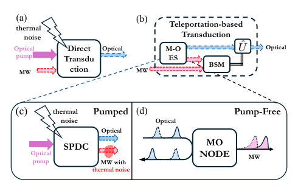
<figcaption class="paper-figure-caption"><b>Fig 1.</b> FIG. 1. (a) Direct quantum transduction using up-conversion is affected by thermal noise due to the optical pump. (b) Teleportation-based quantum transduction. A microwave state is teleported to an optical state by consuming an M-O Bell pair. An optical state can also be teleported to a mi- crowave state (not illustrated here). In the panel, a Bell-state measurement (BSM) is jointly performed on the microwave input and the microwave photon from an M-O entanglement source (M-O ES). The measurement result is classically com- municated (double-line) to perform the corresponding unitary ˆU on the optical qubit. (c) M-O entanglement source using spontaneous parametric down conversion (SPDC). The...</figcaption>
</figure>
<figure class="paper-figure-card">
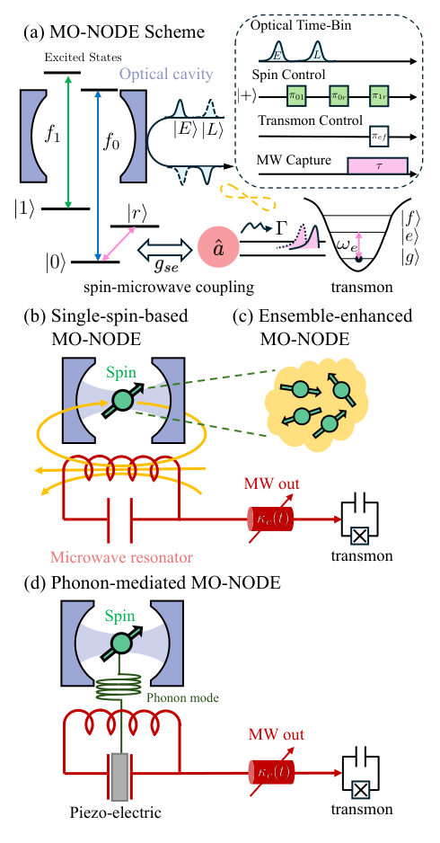
<figcaption class="paper-figure-caption"><b>Fig 2.</b> FIG. 2. (a) Illustration of the MO-NODE with relevant states and parameters. The ∣0⟩, ∣1⟩and ∣r⟩states are in a ground state manifold, which can be split by external field (magnetic or strain). The microwave readout transition 0 −r is reso- nantly coupled either directly or effectively to a microwave resonator mode ˆa. The optical transition to the excited state is coupled to an optical cavity. A transmon with three lowest energy levels ∣g⟩, ∣e⟩, and ∣f⟩is used to herald microwave emis- sion. The inset shows timed control sequences of the scheme. The π0r represents a π-rotation in the ∣0⟩, ∣r⟩subspace of the three-level system. For a physical implementation, (b) a single spin is coupled...</figcaption>
</figure>
<figure class="paper-figure-card">
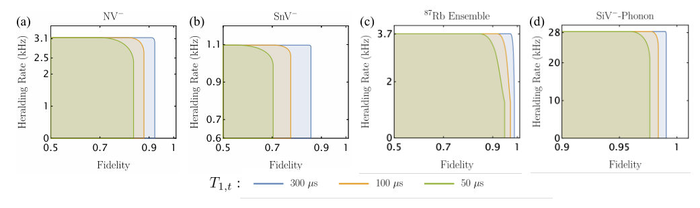
<figcaption class="paper-figure-caption"><b>Fig 3.</b> FIG. 3. Figures of merit for our MO-NODE across different platforms and transmon lifetimes T1,t with fixed ϵ = 0.01.</figcaption>
</figure>
<figure class="paper-figure-card">
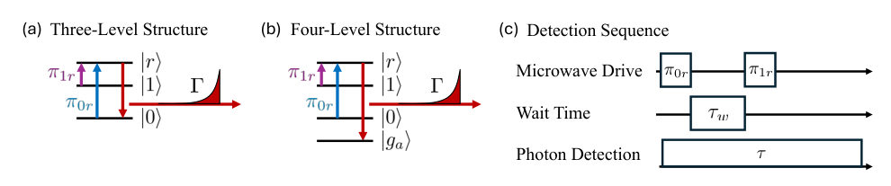
<figcaption class="paper-figure-caption"><b>Fig 4.</b> FIG. 4. Microwave retrieval using (a) a three-level structure and (b) a four-level structure containing the ground state ∣ga⟩. (c) Pulse and detection sequence.</figcaption>
</figure>
<figure class="paper-figure-card">
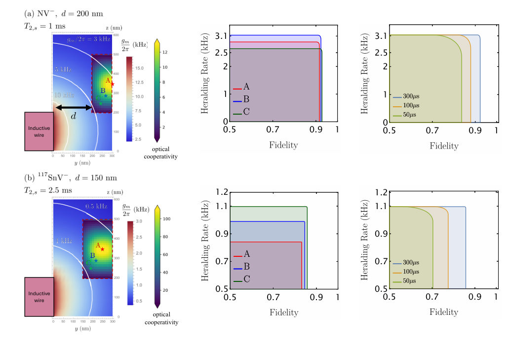
<figcaption class="paper-figure-caption"><b>Fig 5.</b> FIG. 5. Figures of merit for selected spin positions, indicated by stars, in the optical cavity for different color centers. The inductive wire generates zero-point magnetic-field fluctuations that couple to the spin magnetic dipole with coupling rate gm [51]. The middle panels show the heralding rate and fidelity for the selected spin positions at a transmon lifetime of T1,t = 300 µs. For each color center, the best-performing spin position is selected from the middle panels: position B for the NV−center and position C for the 117SnV−center. The figures of merit are then compared as a function of the transmon lifetime T1,t in the right panels. All plots assume a transmon measurement error...</figcaption>
</figure>
</div>

<p><strong>Summary.</strong> This paper introduces a novel, pump-free method for generating microwave-optical Bell pairs, which is crucial for quantum transduction linking superconducting circuits to optical networks. By leveraging spin or atomic systems coupled to optical and microwave cavities, the authors demonstrate protocols that maintain high fidelity and operational rates while circumventing the noise issues associated with traditional optical pumping techniques.</p>
<p><strong>Why it may be interesting.</strong> This work is highly relevant as it tackles the fundamental engineering challenge of quantum interconnects by providing detailed theoretical protocols for generating high-quality entangled pairs between microwave and optical domains using solid-state and atomic platforms.</p>
<details>
<summary>Detailed structure</summary>
<p><strong>Main problem.</strong> The primary challenge is achieving quantum transduction—the coherent conversion of quantum states between microwave and optical frequencies—while avoiding detrimental effects from strong optical pumping.</p>
<p><strong>Main result.</strong> The authors propose and analyze a pump-free microwave-optical Bell-pair source (MO-NODE) that generates heralded Bell pairs using spin or atomic systems, achieving high fidelity and kilohertz-range rates.</p>
<p><strong>Method.</strong> The method involves engineering the entanglement generation via resonant coupling between a spin/atom system and microwave/optical cavities, utilizing time-bin encoding and cavity QED principles.</p>
<p><strong>Model / system.</strong> The work models three distinct physical implementations: single color centers, atomic ensembles (e.g., 87Rb), and phonon-mediated systems. The underlying physics is described using cavity QED Hamiltonians and decay rate analyses.</p>
<p><strong>Key observables.</strong> Heralded Bell pair rate ($R_{	ext{herald}}$), heralded fidelity ($F_{	ext{herald}}$), and the dark-state leakage probability ($P_D|R$).</p>
<p><strong>Important parameters / regimes.</strong> Cooperativity ($C$), cavity decay rates ($\kappa_o, \kappa_e$), spin dephasing time ($T_{2,s}$), and coupling strengths ($g$).</p>
<p><strong>Assumptions / limitations.</strong> The analysis relies on approximations such as the critical-coupling limit, adiabatic elimination of cavity/phonon modes, and assuming the coupling rate exceeds intrinsic decoherence rates.</p>
<p><strong>Figures summary.</strong> Figures compare direct transduction, teleportation-based transduction, and the proposed pump-free MO-NODE scheme across various physical platforms (spin, ensemble, phonon).</p>
<p><strong>Paper structure.</strong> The paper progresses from establishing the need for pump-free transduction, detailing the single-spin protocol, generalizing to ensemble and phonon-mediated systems, and analyzing leakage probabilities in inhomogeneous environments.</p>
</details>
<details>
<summary>Abstract</summary>
<p>The coherent conversion between microwave and optical photons, known as quantum transduction, is critical for connecting superconducting processors to optical networks. Existing methods are limited by complications associated with optical pumping. We propose a pump-free microwave-optical Bell-pair source for teleportation-based transduction. Using a spin or atomic system resonantly coupled to optical and microwave cavities, the scheme generates loss-robust heralded Bell pairs. Across color centers, atomic ensembles, and phonon-mediated systems, this assembly achieves kilohertz-range heralding rates with high fidelity.</p>
</details>
<p><sub><a href="#top">↑ back to top</a></sub></p>

<p><a id="paper-2609.16147"></a></p>
<h3 id="quantum-critical-solids"><a href="http://arxiv.org/abs/2609.16147v1">Quantum Critical Solids</a></h3>
<p><strong>Authors:</strong> Subham Dutta Chowdhury, Leo Radzihovsky, Luca V. Delacrétaz<br>
<strong>Type:</strong> theory · <strong>Category:</strong> statistical mechanics · <strong>PDF:</strong> <a href="https://arxiv.org/pdf/2609.16147v1">https://arxiv.org/pdf/2609.16147v1</a><br>
<strong>Analysis basis:</strong> full PDF text, analyzed in chunks
<strong>Topic relevance:</strong> <code>Keldysh / 2PI / non-Gaussian methods</code> <strong>2/5</strong> · <code>non-equilibrium universality</code> <strong>2/5</strong> · <code>Frenkel-Kontorova</code> <strong>1/5</strong> · <code>analog quantum simulation</code> <strong>1/5</strong> · <code>driven-dissipative phase transition</code> <strong>1/5</strong></p>
<div class="figure-strip-hint">↔ Scroll figures horizontally</div>
<div class="paper-figures-scroll">
<figure class="paper-figure-card">
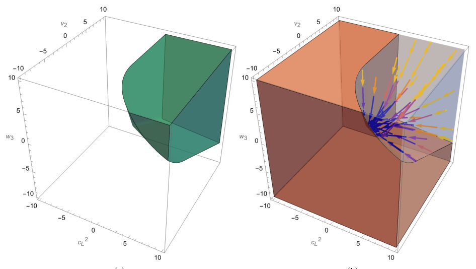
<figcaption class="paper-figure-caption"><b>Fig 1.</b> Figure 1. (a) Stability region of the couplings c2 L, ν2 and w3 due to (D16) and (D17). (b) RG flows of the couplings c2 L, ν2 and w3 along with the region excluded by stability conditions (D16) and (D17).</figcaption>
</figure>
</div>

<p><strong>Summary.</strong> This work theoretically analyzes quantum critical solids characterized by 'floppy' transverse phonons, leading to a Lifshitz quantum critical point. Using RG techniques in $d=4-\epsilon$, the authors determine universal critical exponents and show how the dimensionality dictates the nature of the critical interactions. The findings are crucial for understanding the non-linear response of quantum materials near phase transitions.</p>
<p><strong>Why it may be interesting.</strong> The detailed analysis of nonlinear elastic response and the RG flow near quantum critical points provides a powerful theoretical framework for understanding emergent quantum phases in condensed matter systems, which is relevant to many-body dynamics.</p>
<details>
<summary>Detailed structure</summary>
<p><strong>Main problem.</strong> The paper investigates the universal critical behavior of quantum solids, specifically focusing on the fate of 'floppy' solids whose transverse phonons have a vanishing velocity.</p>
<p><strong>Main result.</strong> The system is driven toward a strongly-coupled Lifshitz quantum critical point (QCP) in $d=3$, although the transition is generically first-order. The analysis reveals distinct dimensional behaviors, notably the vanishing of cubic nonlinearity in $d=2$.</p>
<p><strong>Method.</strong> The study employs the Renormalization Group (RG) technique within an $\epsilon = 4-d$ expansion to analyze the effective field theory of elasticity.</p>
<p><strong>Model / system.</strong> The system is modeled as a quantum solid described by an effective Lagrangian for transverse phonons, leading to a Lifshitz QCP. The analysis distinguishes between the vector nature of the phonons, which introduces cubic nonlinearities, and the scalar case.</p>
<p><strong>Key observables.</strong> Nonlinear elastic response ($\epsilon \sim \sigma^{1/\delta}$), specific heat ($C_V \sim T d/z$), and the dynamic shear modulus ($\mu(\omega, T)$).</p>
<p><strong>Important parameters / regimes.</strong> Dimensionality ($d$), the dynamic exponent ($z$), and the correlation length exponent ($
u$).</p>
<p><strong>Assumptions / limitations.</strong> The analysis relies on the $\epsilon$-expansion and assumes that the critical behavior is visible within the Ginzburg region, despite the transition being generically first-order.</p>
<p><strong>Figures summary.</strong> The figures illustrate the stability regions and RG flows of the coupling constants ($c_2^L, 
u^2, w_3$) in the $d=2$ limit, constrained by stability conditions.</p>
<p><strong>Paper structure.</strong> The paper progresses by establishing the EFT for floppy solids, analyzing the RG flow in $d=4-\epsilon$ to find critical exponents, and then dedicating significant sections to the specific, non-trivial behavior observed in $d=2$ due to the vanishing of the cubic coupling.</p>
</details>
<details>
<summary>Abstract</summary>
<p>We study the fate of quantum solids with a vanishing velocity of transverse phonons. Such <code>floppy'' solids exhibit a cubic elastic nonlinearity that is relevant in spatial dimensions $d<4$ and drives the system to a strongly-coupled Lifshitz quantum critical point in $d=3$, that we analyze in an $ε= 4-d$ expansion. The associated phase transition is generically first-order, preempting the system's full access to the strongly-coupled fixed point. Nevertheless, the critical data of this quantum critical point is accessible within a Ginzburg region in the vicinity of the transition. This cubic nonlinearity vanishes exactly in $d=2$, where the leading interactions are instead quartic and are marginal, leading to weak logarithmic singularities. We discuss possible realizations of this</code>crystal Lifshitz criticality'' in quantum materials.</p>
</details>
<p><sub><a href="#top">↑ back to top</a></sub></p>

<p><a id="paper-2609.16109"></a></p>
<h3 id="boundary-duals-of-bulk-detectors"><a href="http://arxiv.org/abs/2609.16109v1">Boundary duals of bulk detectors</a></h3>
<p><strong>Authors:</strong> Jacqueline Caminiti, Robert C. Myers, Kelly Wurtz<br>
<strong>Type:</strong> theory · <strong>Category:</strong> other · <strong>PDF:</strong> <a href="https://arxiv.org/pdf/2609.16109v1">https://arxiv.org/pdf/2609.16109v1</a><br>
<strong>Analysis basis:</strong> full PDF text, analyzed in chunks
<strong>Topic relevance:</strong> <code>Keldysh / 2PI / non-Gaussian methods</code> <strong>2/5</strong> · <code>Full counting statistics</code> <strong>1/5</strong> · <code>correlated / nonlocal dissipation</code> <strong>1/5</strong> · <code>methods for driven-dissipative</code> <strong>1/5</strong> · <code>quantum measurements</code> <strong>1/5</strong></p>
<div class="figure-strip-hint">↔ Scroll figures horizontally</div>
<div class="paper-figures-scroll">
<figure class="paper-figure-card">
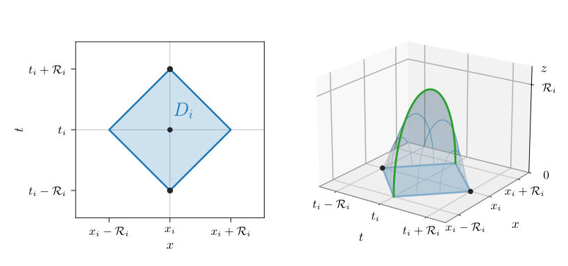
<figcaption class="paper-figure-caption"><b>Fig 1.</b> Figure 1: Left panel: the support of the kernel KDi is the boundary causal diamond Di = {(t, x) : |t−ti|+|x−xi| ≤Ri}. Right panel: the set of bulk points reconstructible from this boundary diamond is its causal wedge W[Di]. The intersection of the two lightcones as given in eq. (2.13) is shown in green. amond-support</figcaption>
</figure>
<figure class="paper-figure-card">
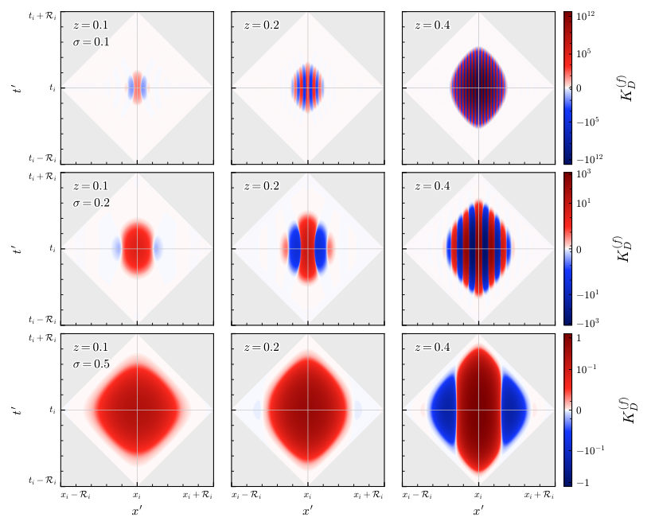
<figcaption class="paper-figure-caption"><b>Fig 2.</b> Figure 2: Numerical evaluation of the smeared kernel K(f) D in eq. (2.41), for ∆= 1 in d = 2. Columns show z = 0.1, z = 0.2, and z = 0.4 from left to right in units of Ri. Rows show σ0 = σ1 = 0.1, 0.2, and 0.5 from top to bottom. The plots are shown on a general boundary diamond Di, with outer tick labels indicating x′ = xi −Ri, xi, xi +Ri along the bottom and t′ = ti −Ri, ti, ti +Ri along the left. Each row has its own colour scale, shared across the three panels in that row, showing the raw value of K(f) D . _full_numeric</figcaption>
</figure>
<figure class="paper-figure-card">

<figcaption class="paper-figure-caption"><b>Fig 3.</b> Figure 2 shows numerical evaluations of K(f) D from eq. (2.41) at three bulk depths and for three smearing widths. In the figure and throughout the remainder of this subsection, we set (t0, x0) = (ti, xi) (and hence, T0 = 0 = X0), which aligns the bulk operator at the center of the causal diamond. In Rindler coordinates, the operator lies along the line (Z, T = 0, X = 0), where Z = 2Riz/(z2 + R2 i ) from eq. (2.15). The oscillations visible in figure 2 can be understood from the large-|k| part of the kernel on the horizontal time slice. We therefore set T0 = X0 = T ′ = 0 and define</figcaption>
</figure>
<figure class="paper-figure-card">
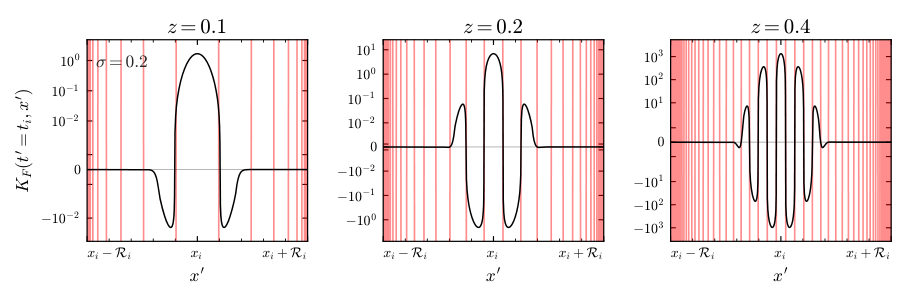
<figcaption class="paper-figure-caption"><b>Fig 4.</b> Figure 3: Eq. (2.57) gives a good fit to the phase behaviour of K(f) D . The zeros of eq. (2.57) are shown as vertical red lines. Meanwhile, the K(f) D profile along the t′ = ti slice is shown in black, and its zeros agree well with the locations of the red lines. Here we have set σ = 0.2, but a similar matching holds for the other cases in figure 2. fig:slice</figcaption>
</figure>
<figure class="paper-figure-card">
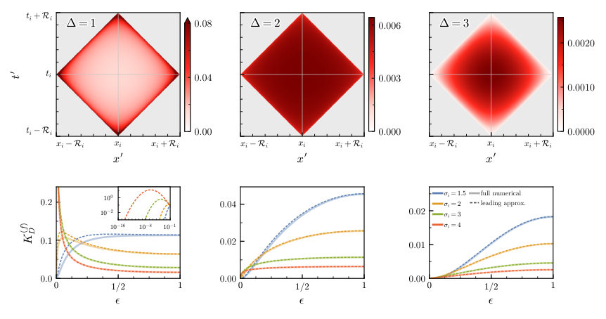
<figcaption class="paper-figure-caption"><b>Fig 5.</b> Figure 4: Large-smearing behaviour of K(f) D . From left to right, ∆= 1, 2, 3, with z/Ri = 0.4. The top row shows the leading approximation (2.63) for σ0 = σ1 = 4. The bottom row shows the corresponding t′ = ti cross-sections as functions of ϵ, comparing σ0 = σ1 = 1.5, 2, 3, 4. Thick translucent curves show the full numerical integral, while thin dashed curves show the approximation. The bottom-left inset resolves the decay near the diamond edge. K_D_Hkll_plot</figcaption>
</figure>
</div>

<p><strong>Summary.</strong> This paper investigates the holographic dual of a local Unruh-DeWitt detector in AdS space using the HKLL reconstruction program. It calculates entanglement harvesting by relating bulk detector interactions to smeared boundary operators. The work is significant for understanding how quantum information processes are encoded across the AdS/CFT boundary.</p>
<p><strong>Why it may be interesting.</strong> This work connects detector physics (Unruh effect) in curved spacetime to holographic principles, providing a concrete calculation of quantum information measures like entanglement harvesting using advanced mathematical tools.</p>
<details>
<summary>Detailed structure</summary>
<p><strong>Main problem.</strong> The central problem is determining the boundary dual description for a local Unruh-DeWitt detector situated in the bulk of Anti-de Sitter (AdS) space.</p>
<p><strong>Main result.</strong> The boundary dual is found to be a smeared detector on the boundary, whose smearing profile is dictated by the HKLL reconstruction kernel. The framework successfully analyzes entanglement harvesting in AdS$_3$.</p>
<p><strong>Method.</strong> The authors employ the HKLL reconstruction program to map bulk field correlators to boundary correlators, calculating entanglement harvesting via the two-detector density matrix to quadratic order in the coupling constant.</p>
<p><strong>Model / system.</strong> The system involves Unruh-DeWitt detectors coupled to quantum fields in AdS space, analyzed using the AdS/CFT correspondence framework.</p>
<p><strong>Key observables.</strong> Entanglement harvesting amount, the two-detector density matrix, and the relationship between bulk microcausality and boundary detector overlap.</p>
<p><strong>Important parameters / regimes.</strong> The coupling constant $\lambda$, the dimension $\Delta$ of the dual operator, and the specific choice of the HKLL smearing kernel.</p>
<p><strong>Assumptions / limitations.</strong> The reconstruction is treated as an approximate notion, valid in a semiclassical regime, and the analysis focuses on free quantum fields on a fixed AdS background.</p>
<p><strong>Figures summary.</strong> Figure 1 illustrates the support of the kernel $K_{D_i}$ (the causal diamond $D_i$) and the corresponding bulk region $W[D_i]$ (the causal wedge).</p>
<p><strong>Paper structure.</strong> The paper reviews bulk reconstruction, introduces the detector formalism, performs the entanglement harvesting calculations, and discusses the resulting physical implications.</p>
</details>
<details>
<summary>Abstract</summary>
<p>What is the boundary dual of an Unruh-DeWitt detector in anti-de Sitter space? We argue that this question is naturally answered by the HKLL reconstruction program. A local detector in the bulk can be associated with a smeared detector in the boundary, where the choice of smearing depends on the choice of HKLL kernel. We use this formalism to analyze entanglement harvesting in the Poincaré patch of AdS$_{3}$ for a bulk Unruh-DeWitt detector paired either with a boundary detector or with a second bulk detector. We compute the amount of harvesting in the standard way, namely by evaluating the two-detector density matrix to quadratic order in the coupling $λ$. Additionally, we address an apparent tension between microcausality for spacelike-separated bulk detectors and the fact that the dual HKLL detectors may directly overlap in the boundary theory.</p>
</details>
<p><sub><a href="#top">↑ back to top</a></sub></p>

<p><a id="paper-2609.16483"></a></p>
<h3 id="entropy-driven-transitions-between-extended-integer-and-fractional-quantum-hall-regimes"><a href="http://arxiv.org/abs/2609.16483v1">Entropy-driven transitions between extended integer and fractional quantum Hall regimes</a></h3>
<p><strong>Authors:</strong> Kyung-Su Kim, Steven A. Kivelson<br>
<strong>Type:</strong> theory · <strong>Category:</strong> strongly correlated electrons · <strong>PDF:</strong> <a href="https://arxiv.org/pdf/2609.16483v1">https://arxiv.org/pdf/2609.16483v1</a><br>
<strong>Analysis basis:</strong> full PDF text, analyzed in chunks
<strong>Topic relevance:</strong> <code>Keldysh / 2PI / non-Gaussian methods</code> <strong>2/5</strong> · <code>analog quantum simulation</code> <strong>2/5</strong> · <code>driven-dissipative phase transition</code> <strong>1/5</strong> · <code>non-equilibrium universality</code> <strong>1/5</strong></p>
<div class="figure-strip-hint">↔ Scroll figures horizontally</div>
<div class="paper-figures-scroll">
<figure class="paper-figure-card">
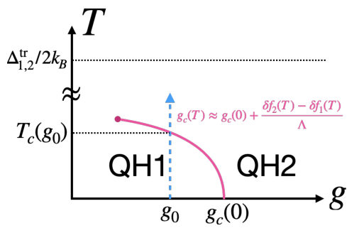
<figcaption class="paper-figure-caption"><b>Fig 1.</b> FIG. 1. Schematic T-g phase diagram for two competing QH regimes, QH1 and QH2. The (magenta) phase boundary gc(T) bends toward the lower-entropy QH1 regime. In the simplest case in which there are no additional finite T distinctions between the two phases associated with broken symmetries, the phase transition is first-order and ends at an ordinary critical point—otherwise additional phase boundaries arise. For fixed g0 close to gc(0), the transport gaps generally satisfy the relation ∆tr 1,2/2kB ≫Tc, so the finite-T Hall response is nearly quantized on both sides of the thermal transition.</figcaption>
</figure>
<figure class="paper-figure-card">
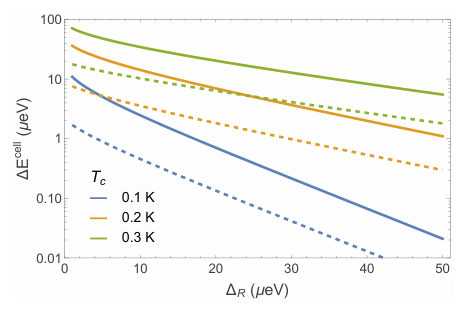
<figcaption class="paper-figure-caption"><b>Fig 2.</b> FIG. 2. The required energy difference ∆Ecell per moir´e unit cell between the eIQH and FQH states to give a thermal transition at Tc as a function of the magnetoroton gap ∆R (16). Solid lines use the ring-minima approximation (16), whereas dashed lines use the discrete-minima result, Eq. (E6), with NR = 3 and Eθ ≡ℏ2k2 R/(2mθ) = ER.</figcaption>
</figure>
</div>

<p><strong>Summary.</strong> This theoretical work investigates how entropy can drive first-order thermal transitions between competing Quantum Hall phases, such as integer and fractional QH states. By analyzing the free energy contributions from collective excitations like magnons and magnetorotons, the authors propose a mechanism explaining the observed thermal evolution in moiré graphene. This highlights the crucial role of thermal fluctuations in determining the ground state of strongly correlated electron systems.</p>
<p><strong>Why it may be interesting.</strong> The focus on entropy-driven phase transitions in strongly correlated electron systems, particularly using soft modes like magnetorotons, provides a rich theoretical tool applicable to understanding emergent quantum phases in novel condensed matter platforms like moiré heterostructures.</p>
<details>
<summary>Detailed structure</summary>
<p><strong>Main problem.</strong> The paper analyzes the mechanism driving first-order, finite-temperature thermal transitions between competing Quantum Hall (QH) regimes, specifically between extended integer and fractional QH states.</p>
<p><strong>Main result.</strong> The transition is shown to be driven by the difference in the entropy associated with low-energy excitations (like Goldstone or magnetoroton modes), providing a plausible bulk mechanism for thermal evolution in moiré graphene.</p>
<p><strong>Method.</strong> The analysis involves calculating the free-energy density difference ($\Delta f$) between the competing states, incorporating contributions from gapless Goldstone modes (e.g., magnons) and soft gapped modes (e.g., magnetorotons).</p>
<p><strong>Model / system.</strong> The general framework is applied to Quantum Hall systems, with a specific focus on moiré rhombohedral graphene (mRG) exhibiting both integer and fractional QH states. The competition is analyzed using free energy minimization.</p>
<p><strong>Key observables.</strong> Free-energy difference ($f_F - f_I$), transition temperature ($k_B T_c$), and the Hall conductivity jump at the first-order boundary.</p>
<p><strong>Important parameters / regimes.</strong> Temperature ($T$), energy gaps ($\Delta_R$), warping energy ($W$), and interaction strengths ($J$).</p>
<p><strong>Assumptions / limitations.</strong> The analysis relies on approximations such as treating magnetorotons as noninteracting bosons and assuming specific energy scale hierarchies (e.g., $\Delta_R \gg k_B T \gg W$).</p>
<p><strong>Figures summary.</strong> Figure 1 schematically illustrates the T-g phase diagram for two competing QH regimes, and Table I summarizes the entropy-driven mechanisms for various QH transitions.</p>
<p><strong>Paper structure.</strong> The paper develops a general theoretical framework for entropy-driven transitions, applies this to specific physical models (Coulomb, short-range, magnetoroton), and concludes with a detailed application to moiré graphene, analyzing the role of different excitation modes.</p>
</details>
<details>
<summary>Abstract</summary>
<p>Electronic states with coexisting Wigner-crystal order can sometimes exhibit a quantum Hall effect over a finite range of electron densities---i.e., exhibit ``extended'' quantum Hall (QH) plateaus in the absence of disorder. Such an extended quantum Hall state can then compete with other QH states over the same density range, allowing a first-order thermal transition between them. Here, we analyze several settings in which the entropy associated with Goldstone modes (e.g., magnons or phonons) or soft gapped modes (e.g., magnetoroton) drives a finite-temperature transition between competing QH regimes. Applying this framework to moiré rhombohedral graphene, we argue that a soft magnetoroton in a fractional quantum anomalous Hall state provides a plausible bulk mechanism for the observed thermal evolution from an extended integer QH to a fractional QH regime.</p>
</details>
<p><sub><a href="#top">↑ back to top</a></sub></p>

<p><a id="paper-2609.17433"></a></p>
<h3 id="nonlinear-electron-phonon-interactions-from-first-principles"><a href="http://arxiv.org/abs/2609.17433v1">Nonlinear electron-phonon interactions from first principles</a></h3>
<p><strong>Authors:</strong> Zhenbang Dai, Feliciano Giustino<br>
<strong>Type:</strong> theory · <strong>Category:</strong> other · <strong>PDF:</strong> <a href="https://arxiv.org/pdf/2609.17433v1">https://arxiv.org/pdf/2609.17433v1</a><br>
<strong>Analysis basis:</strong> full PDF text, analyzed in chunks
<strong>Topic relevance:</strong> <code>Keldysh / 2PI / non-Gaussian methods</code> <strong>2/5</strong> · <code>analog quantum simulation</code> <strong>1/5</strong> · <code>methods for driven-dissipative</code> <strong>1/5</strong> · <code>quantum measurements</code> <strong>1/5</strong></p>
<div class="figure-strip-hint">↔ Scroll figures horizontally</div>
<div class="paper-figures-scroll">
<figure class="paper-figure-card">
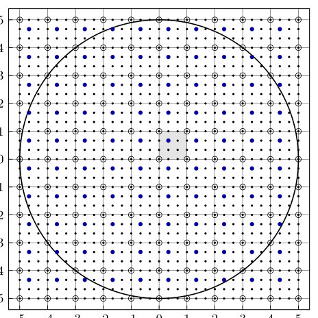
<figcaption class="paper-figure-caption"><b>Fig 1.</b> FIG. 1. Relation between the reciprocal space of the unit cell and that of the BvK supercell. This example illustrates a two-dimensional square lattice with lattice parameter a and BvK supercell of size 3×3 unit cells. The black dots are the reciprocal lattice vectors of the BvK supercell, G. The circles are the reciprocal lattice vectors of the unit cell, g. The filled gray square is the unit-cell Brillouin zone, and the blue dot is a representative k point inside the Brillouin zone. The other blue dots are the set of points k+g. For each such point, there is a unique G in the supercell reciprocal lattice. The circle denotes the wavevector cutoff (in this example, 5 × 2π/a).</figcaption>
</figure>
<figure class="paper-figure-card">
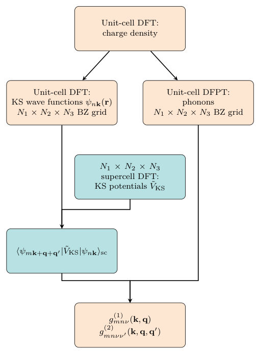
<figcaption class="paper-figure-caption"><b>Fig 2.</b> FIG. 2. Workflow for calculating second-order electron- phonon coupling matrix elements via finite differences. The orange boxes indicate unit-cell DFT calculations, and the blue boxes indicate supercell DFT calculations. The Brillouin zone (BZ) grid for the unit-cell calculations equals the number of unit cells in the BvK supercell.</figcaption>
</figure>
<figure class="paper-figure-card">
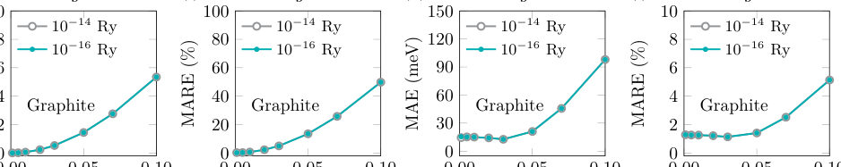
<figcaption class="paper-figure-caption"><b>Fig 3.</b> FIG. 3. Benchmark of linear [g(1)] and quadratic [g(2)] electron-phonon coupling matrix elements computed via finite difference. The averages are evaluated over 4 valence bands and 4 conduction bands for diamond; 5 valence bands and 5 conduction bands for LiF; and 8 valence bands and 8 conduction bands for graphite. (a) and (b): Mean absolute error (MAE) and mean absolute relative error (MARE) of the linear electron-phonon coupling in diamond, respectively, plotted as a function of the atomic displacement amplitude δ used in the finite-difference formulas. The ground truth corresponds to DFPT calculations of the matrix elements. (c) and (d): MAE and MARE of the quadratic electron-phonon...</figcaption>
</figure>
<figure class="paper-figure-card">
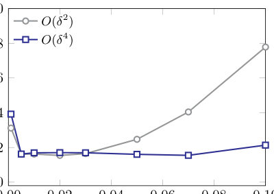
<figcaption class="paper-figure-caption"><b>Fig 4.</b> FIG. 4. Dependence of the mean absolute error (a) and mean absolute relative error (b) on the finite-difference sten- cils for LiF. The fourth-order-accuracy stencil (blue curves) can reduce the sensitivity on δ compared with second-order- accuracy stencil (gray curves).</figcaption>
</figure>
<figure class="paper-figure-card">
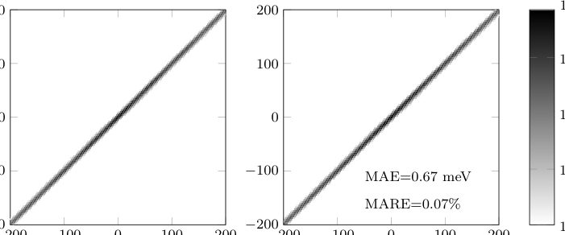
<figcaption class="paper-figure-caption"><b>Fig 5.</b> FIG. 5. Comparison of second-order electron-phonon coupling matrix elements [g(2)] calculated under the RIA with the same quantity calculated by including all neighbor shells, for diamond. (a) The statistics of the absolute values of second-order electron-phonon matrix elements, showing that 98% of these matrix elements are smaller than 200 meV in magnitude, as indicated by the dashed line. (b) Comparison of the real part of g(2) between RIA and all-neighbor calculations, within the range of ±200 meV. To effectively present 6×108 datapoints, we binned the scatter plot via hexagonal tiles; darker tiles indicate more matrix elements within the tile. (c) Same as (b), but for the imaginary part...</figcaption>
</figure>
</div>

<p><strong>Summary.</strong> This paper introduces a novel, systematic computational method to calculate nonlinear electron-phonon interactions of any order directly from first principles. By extending beyond linear approximations, the authors show that these higher-order couplings are crucial for accurately predicting key properties like polaron binding energies. This methodology promises to advance the study of charge transport and excited-state dynamics in various materials.</p>
<p><strong>Why it may be interesting.</strong> While focused on condensed matter, the rigorous, systematic, and <em>ab initio</em> nature of developing a general computational framework for higher-order interactions is highly relevant to modeling complex, non-adiabatic dynamics in quantum systems.</p>
<details>
<summary>Detailed structure</summary>
<p><strong>Main problem.</strong> The primary goal is to develop a first-principles theory and computational method to calculate nonlinear electron-phonon interactions of arbitrary order, overcoming the limitations of existing linear-coupling approximations.</p>
<p><strong>Main result.</strong> The authors present a systematic framework to compute second-order (and higher) electron-phonon coupling matrix elements, demonstrating that these nonlinear terms are essential for achieving quantitative accuracy in polaron formation energies.</p>
<p><strong>Method.</strong> The method combines unit-cell calculations of electron wavefunctions with supercell calculations of phonon perturbations, allowing for the calculation of complex Born-von-Kármán integrals.</p>
<p><strong>Model / system.</strong> The physics centers on electron-phonon coupling, which governs phenomena like superconductivity, polaron formation, and carrier dynamics. The calculations are applied to representative materials including diamond, lithium fluoride, and graphite.</p>
<p><strong>Key observables.</strong> Second-order electron-phonon coupling matrix elements ($g^{(2)}$), electron quasiparticle energy shifts (e.g., Debye-Waller correction), polaron formation energies, and hopping barriers.</p>
<p><strong>Important parameters / regimes.</strong> The calculation is sensitive to the order of coupling (second-order being a key focus) and the nature of the exchange-correlation functional used (semilocal or nonlocal).</p>
<p><strong>Assumptions / limitations.</strong> The method is designed to overcome the limitations of the rigid-ion approximation (RIA) and the computational difficulty of calculating off-diagonal, nonlinear coupling terms.</p>
<p><strong>Figures summary.</strong> Not specified in the notes, but the methodology involves mapping unit-cell wavevectors to the reciprocal space of the BvK supercell.</p>
<p><strong>Paper structure.</strong> The paper first establishes the physical necessity of nonlinear couplings, then details the novel computational framework combining unit-cell and supercell calculations to evaluate the required coupling integrals, and finally validates the method by computing $g^{(2)}$ for three distinct material classes.</p>
</details>
<details>
<summary>Abstract</summary>
<p>Electron-phonon interactions underpin a variety of phenomena, ranging from transport and superconductivity to polarons and ultrafast carrier dynamics. Despite being one of the most intensely studied subjects in condensed matter physics, research on electron-phonon physics mostly focused on linear, first-order couplings. Second- and higher-order nonlinear couplings are commonly ignored because their calculations are too demanding and we lack computational frameworks that can provide both diagonal and off-diagonal coupling matrix elements. In this work, we report a theory and computational method for computing nonlinear electron-phonon interactions of any order in real materials. Our approach combines the advantages of unit-cell calculations of electron wavefunctions and supercell calculations of phonon perturbations, is systematically improvable, can be used with either semilocal or nonlocal exchange-correlation functionals, and is amenable to Wannier-Fourier interpolation. As a first proof of concept, we illustrate this method by computing second-order electron-phonon coupling matrix elements in diamond, lithium fluoride, and graphite as representative nonpolar semiconductors, polar semiconductors, and metals, respectively. Furthermore, we generalize the ab initio polaron equations to second-order electron-phonon couplings, and we show that second-order couplings are essential to achieve quantitative accuracy in polaron formation energies and hopping barriers. The present methodology will find application in the study of all properties and phenomena that are currently being investigated within the linear electron-phonon coupling approximation, from phonon-mediated superconductivity to excited-states dynamics, both in harmonic and anharmonic systems.</p>
</details>
<p><sub><a href="#top">↑ back to top</a></sub></p>

<p><a id="paper-2609.17063"></a></p>
<h3 id="development-of-a-physics-informed-neural-framework-meown-for-rapid-prediction-of-muon-stopping-sites-in-crystalline-materials-for-understanding-quantum-magnet-employing-muon-spectroscopy"><a href="http://arxiv.org/abs/2609.17063v1">Development of a Physics-Informed Neural Framework, MEOWN, for Rapid Prediction of Muon Stopping Sites in Crystalline Materials, for understanding Quantum Magnet employing Muon Spectroscopy</a></h3>
<p><strong>Authors:</strong> A. Pandey, K. Sharma, S. Ghosh, G. Roy, T. Basu<br>
<strong>Type:</strong> theory · <strong>Category:</strong> disordered systems and neural networks · <strong>PDF:</strong> <a href="https://arxiv.org/pdf/2609.17063v1">https://arxiv.org/pdf/2609.17063v1</a><br>
<strong>Analysis basis:</strong> full PDF text, analyzed in chunks
<strong>Topic relevance:</strong> <code>methods for driven-dissipative</code> <strong>2/5</strong> · <code>Keldysh / 2PI / non-Gaussian methods</code> <strong>1/5</strong> · <code>analog quantum simulation</code> <strong>1/5</strong></p>
<div class="figure-strip-hint">↔ Scroll figures horizontally</div>
<div class="paper-figures-scroll">
<figure class="paper-figure-card">
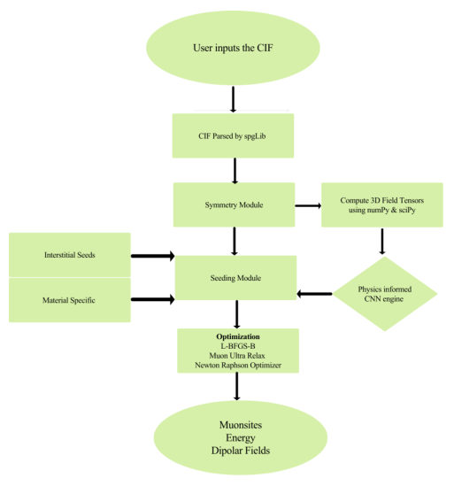
<figcaption class="paper-figure-caption"><b>Fig 1.</b> FIG. 1. Workflow of the MEOWN framework. Starting from an input CIF file, MEOWN identifies crystal symmetry, con- structs physics-based field tensors, generates candidate muon sites using a physics-informed CNN and seeding strategies, and refines them through optimization to predict equilibrium muon stopping sites, energies, and local dipolar fields.</figcaption>
</figure>
<figure class="paper-figure-card">
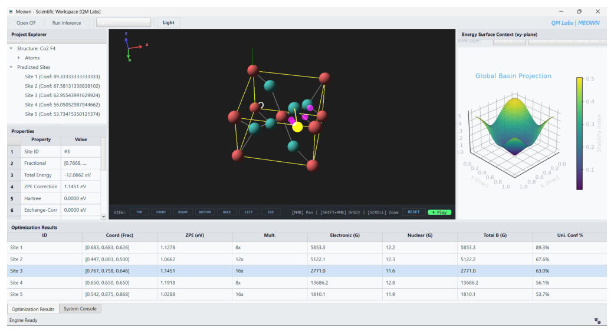
<figcaption class="paper-figure-caption"><b>Fig 2.</b> FIG. 2. Graphical user interface (GUI) of MEOWN. The interface displays the crystal structure, predicted muon stopping sites, energy landscape, and the optimized site information, including fractional coordinates, energies, multiplicities, dipolar fields, and confidence scores.</figcaption>
</figure>
</div>

<p><strong>Summary.</strong> This paper introduces MEOWN, a novel, physics-informed machine learning framework designed to predict where a muon will stop inside a crystal lattice. By combining a 3D-CNN with fundamental physics models, it achieves accuracy comparable to expensive DFT calculations but in minutes. This drastically accelerates the analysis of quantum materials using muon spectroscopy.</p>
<p><strong>Why it may be interesting.</strong> While focused on condensed matter magnetism, the core methodology—integrating complex, multi-scale physics models (like polarization and screening) directly into a neural network architecture for rapid prediction—is highly relevant to developing ML tools for complex quantum many-body systems.</p>
<details>
<summary>Detailed structure</summary>
<p><strong>Main problem.</strong> The core challenge is to rapidly and accurately determine the equilibrium muon stopping site in crystalline materials to interpret Muon-spin rotation/relaxation ($\mu$SR) experiments.</p>
<p><strong>Main result.</strong> The developed framework, MEOWN, predicts stopping sites and local dipolar fields for benchmark materials with first-principles accuracy in minutes, significantly faster than conventional DFT methods.</p>
<p><strong>Method.</strong> MEOWN is a physics-informed machine learning framework that embeds multiple physical interactions (electrostatic, polarization, etc.) into a 3D-CNN to guide the prediction of the potential energy landscape.</p>
<p><strong>Model / system.</strong> The system involves a positive muon ($\mu^+$) implanted into a crystalline solid. The effective potential energy is modeled as a sum of several physical terms, including Hartree-Fock, polarization, overlap repulsion, and zero-point energy.</p>
<p><strong>Key observables.</strong> Equilibrium muon stopping site (coordinates), local dipolar magnetic field, and total energy (including ZPE correction).</p>
<p><strong>Important parameters / regimes.</strong> The calculation incorporates effects like electronic screening ($\epsilon_{\mu}(r)$), polarization ($V_{Pol}$), and zero-point motion ($V_{ZPE}$).</p>
<p><strong>Assumptions / limitations.</strong> The method operates within the Born-Oppenheimer approximation, and it is designed as a fast, reliable alternative, not a replacement for full self-consistent DFT.</p>
<p><strong>Figures summary.</strong> Figure 1 illustrates the MEOWN workflow from CIF input to site prediction. Figure 2 shows the GUI output, displaying predicted sites, energy landscapes, and calculated dipolar fields for various materials.</p>
<p><strong>Paper structure.</strong> The paper first details the physical components contributing to the muon potential energy. It then introduces MEOWN, which embeds these physics into a 3D-CNN. The workflow involves multi-stage seeding, CNN inference, structural optimization, and final site ranking based on total energy.</p>
</details>
<details>
<summary>Abstract</summary>
<p>Muon-spin rotation/relaxation is one of the most powerful microscopic probes for understanding magnetic order, spin dynamics, superconductivity, and complex magnetic phases in emerging quantum materials. Quantitative interpretation depends critically on the accurate identification of the muon stopping site, a problem traditionally addressed using density functional theory-based structural relaxation. However, conventional DFT approaches are computationally demanding, time-consuming, and require extensive calculations. Here, we develop MEOWN (Muon Engine for Optimized Weighted Networks), a machine-learning-based, physics-informed computational framework that combines a Polarizable Unperturbed Electrostatic Potential (P-UEP) model with machine-learning-guided optimization and symmetry-driven relaxation to predict energetically favorable muon stopping sites in crystalline solids. MEOWN explicitly incorporates electrostatic interactions, electronic screening, polarization effects, and zero-point motion into the learning workflow, providing physically interpretable predictions with substantially reduced computational cost while maintaining physical consistency and scientific rigor. To validate the framework, we investigated several well-established benchmark materials, including MnSi, CoF2, CaF2, LiF, and NaF. The predicted muon stopping sites and dipolar fields are in close agreement with previously reported DFT+mu results, demonstrating the reliability and transferability of the approach across chemically diverse systems. Notably, MEOWN predicts the equilibrium muon stopping site within a few minutes, offering a significant speedup over conventional DFT-based calculations. This manuscript presents the theoretical foundations, computational methodology, and validation of MEOWN as a general-purpose software for rapid and reliable muon stopping-site prediction in crystalline materials.</p>
</details>
<p><sub><a href="#top">↑ back to top</a></sub></p>

<p><a id="paper-2609.16308"></a></p>
<h3 id="geometric-view-of-iterative-fixed-node-dynamics"><a href="http://arxiv.org/abs/2609.16308v1">Geometric View of Iterative Fixed-Node Dynamics</a></h3>
<p><strong>Authors:</strong> Pranav Kairon, Bryan K. Clark<br>
<strong>Type:</strong> theory · <strong>Category:</strong> statistical mechanics · <strong>PDF:</strong> <a href="https://arxiv.org/pdf/2609.16308v1">https://arxiv.org/pdf/2609.16308v1</a><br>
<strong>Analysis basis:</strong> full PDF text, analyzed in chunks
<strong>Topic relevance:</strong> <code>Keldysh / 2PI / non-Gaussian methods</code> <strong>2/5</strong> · <code>analog quantum simulation</code> <strong>1/5</strong> · <code>methods for driven-dissipative</code> <strong>1/5</strong></p>
<div class="figure-strip-hint">↔ Scroll figures horizontally</div>
<div class="paper-figures-scroll">
<figure class="paper-figure-card">
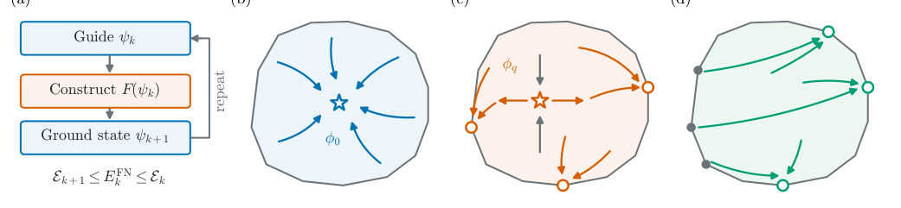
<figcaption class="paper-figure-caption"><b>Fig 1.</b> FIG. 1. Schematic overview of iterative fixed-node dynamics. (a) Each guiding wavefunction defines a fixed-node Hamiltonian whose ground state becomes the next guide; the energies are non-increasing in k. (b–d) Starting from the (b) ground state sign chamber: Iterative fixed node flows to the true ground state from any point. (c) excited state sign chamber: Iterative fixed node generically has repulsive directions (orange) and may have attractive directions (gray); different initial trial wavefunction can approach distinct boundary fixed points. (d) a chamber with no eigenstate: Trajectories starting near a generic point (gray dot) approach a boundary fixed point. Stars mark interior fixed...</figcaption>
</figure>
<figure class="paper-figure-card">
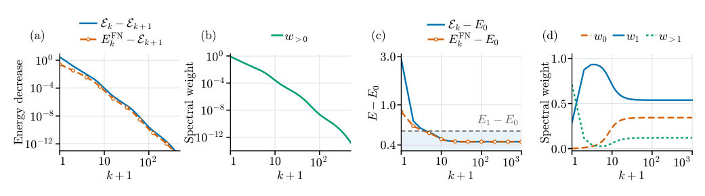
<figcaption class="paper-figure-caption"><b>Fig 2.</b> FIG. 2. Fixed-node iteration in disordered J1-J2 chains: Initial trial wavefunction has (a,b) ground-state signs, L = 12; (c,d) first-excited-state signs, L = 10. Panel (a) shows the physical energy decrease Ek −Ek+1 and the gap EFN k −Ek+1, where Ek = ⟨ψk, Hψk⟩and EFN k = λ0(F(ψk)). Panel (c) shows Ek −E0 and EFN k −E0 crossing below the dashed reference E1 −E0 into the shaded region. Panels (b,d) show spectral weights wn = |⟨ϕn, ψk⟩|2, with w&gt;r = P</figcaption>
</figure>
<figure class="paper-figure-card">
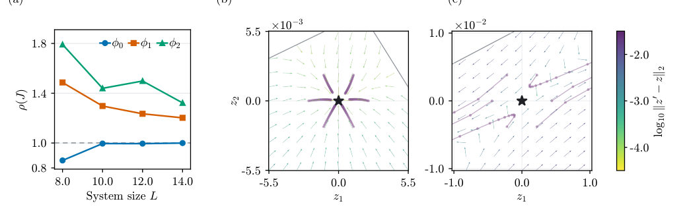
<figcaption class="paper-figure-caption"><b>Fig 3.</b> FIG. 3. Perturbative stability of the iterative fixed-node. (a) Jacobian spectral radius near the ground and first two excited states of disordered J1-J2 chains; the dashed line marks ρ = 1. (b,c) Projected one-step updates near ϕ0 and ϕ1 of an eight-site triangular strip, with ρ(J) = 0.951 and 1.404, respectively. Arrows have uniform length and show the direction of z′ −z; the color of the arrow corresponds to the magnitude, log10 ∥z′ −z∥2. Each panel’s multiplier applies to both coordinates. Purple curves trace successive fixed-node iterates projected into the same axes. Gray lines mark component-zero boundaries in the displayed plane; stars mark the reference eigenstates. The pooled...</figcaption>
</figure>
</div>

<p><strong>Summary.</strong> This work provides a geometric and stability analysis of iterative fixed-node dynamics used to approximate quantum ground states in the presence of the Fermion sign problem. By analyzing the fixed points of the iterative map, the authors prove that the ground state is the stable attractor, while other approximations flow away from the true solution. This clarifies the theoretical foundations for sign-problem mitigation techniques.</p>
<p><strong>Why it may be interesting.</strong> The rigorous mathematical analysis of fixed-point dynamics provides deep insight into the convergence properties of variational methods used to tackle sign problems in strongly correlated quantum systems.</p>
<details>
<summary>Detailed structure</summary>
<p><strong>Main problem.</strong> The paper addresses the Fermion sign problem (FSP) in quantum many-body systems, specifically analyzing the convergence and stability of iterative fixed-node approximations.</p>
<p><strong>Main result.</strong> The self-consistent iteration is shown to drive the system towards the true ground state fixed point, proving that the ground state fixed point is stable while excited state fixed points are unstable.</p>
<p><strong>Method.</strong> The analysis involves studying the fixed points and stability of an iterative map derived from the lattice fixed-node Hamiltonian, utilizing linearization techniques and spectral radius analysis.</p>
<p><strong>Model / system.</strong> The study applies to quantum many-body systems governed by Hamiltonians, comparing continuum electronic structure models with lattice models (e.g., spin-1/2 models, $J_1-J_2$ chains).</p>
<p><strong>Key observables.</strong> Sign structure, energy convergence ($E_k - E_{k+1}$), spectral weight concentration, and the spectral radius ($
ho(J)$) of the Jacobian matrix.</p>
<p><strong>Important parameters / regimes.</strong> The sign structure (chamber) of the ground state, the system size ($L$), and the initial sign-flip probability ($p$).</p>
<p><strong>Assumptions / limitations.</strong> The analysis focuses on the flow of the iterative map independent of practical algorithmic implementation, and relies on linearization around fixed points.</p>
<p><strong>Figures summary.</strong> Figures illustrate the iterative flow towards the ground state in the correct sign chamber, show energy and spectral weight convergence, and plot the spectral radius $
ho(J)$ to confirm stability.</p>
<p><strong>Paper structure.</strong> The paper develops the iterative map, proves the stability of the ground state fixed point, analyzes the instability of excited states, and confirms the reconstruction of ground state amplitudes through self-consistent iteration.</p>
</details>
<details>
<summary>Abstract</summary>
<p>The sign-structure of a quantum many-body ground state is a central quantity in fixed-node approaches to mitigating the Fermion sign problem. For continuum electronic-structure Hamiltonians, the correct sign-structure is sufficient to compute exact ground state properties; on the other hand, lattice fixed-node approaches retain an additional dependence on trial wave-function amplitudes which are improved upon non-optimally while preserving their sign structure. Here we consider an iterative map obtained by repeatedly replacing the fixed-node trial state with the ground state of its associated lattice fixed-node Hamiltonian (independent of whether and how a practical algorithm could implement this iteration). We show the fixed points of this map are eigenstates of the Hamiltonian and reduced Hamiltonian resulting in at most one fixed point in the interior of each sign chamber. We prove that the ground state fixed point is stable and that the boundary of the ground state sign chamber is repulsive. This shows the amplitude dependence beyond having the correct ground state sign-structure disappears under self-consistent iteration. In other sign chambers, energy descent can be obstructed by the imposed sign structure; this tension leads to the iteration driving select amplitudes to zero producing `support collapse' onto chamber boundaries and corresponding to reduced Hamiltonians. Excited-state fixed points are therefore provably unstable and flow toward lower-energy boundary fixed points. We show sign chamber boundaries have a directional stability; boundary points attractive in one direction are repulsive under a sign flip. By revealing the geometry and stability structure of iterative fixed-node dynamics, our results clarify the foundations of a central approach to the Fermion sign problem and motivate potential new algorithmic strategies.</p>
</details>
<p><sub><a href="#top">↑ back to top</a></sub></p>

<p><a id="paper-2609.16975"></a></p>
<h3 id="spin-grid-states-for-quantum-metrology-in-atomic-clocks-limited-by-spontaneous-emission"><a href="http://arxiv.org/abs/2609.16975v1">Spin Grid States for Quantum Metrology in Atomic Clocks Limited by Spontaneous Emission</a></h3>
<p><strong>Authors:</strong> Marius Burgath, Klemens Hammerer<br>
<strong>Type:</strong> theory · <strong>Category:</strong> other · <strong>PDF:</strong> <a href="https://arxiv.org/pdf/2609.16975v1">https://arxiv.org/pdf/2609.16975v1</a><br>
<strong>Analysis basis:</strong> full PDF text, analyzed in chunks
<strong>Topic relevance:</strong> <code>quantum measurements</code> <strong>2/5</strong> · <code>correlated / nonlocal dissipation</code> <strong>1/5</strong> · <code>methods for driven-dissipative</code> <strong>1/5</strong></p>
<div class="figure-strip-hint">↔ Scroll figures horizontally</div>
<div class="paper-figures-scroll">
<figure class="paper-figure-card">
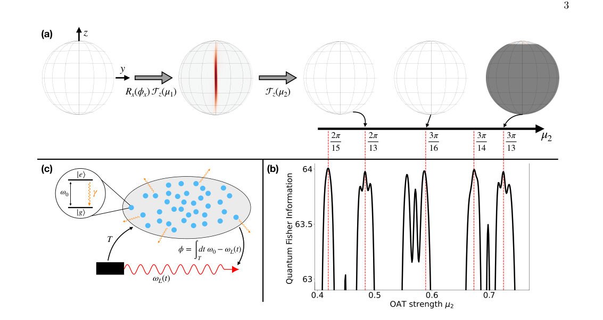
<figcaption class="paper-figure-caption"><b>Fig 1.</b> FIG. 1. (a) Creation of SGSs in two steps, shown for N = 90. First, an SSS is generated from a CSS by OAT and aligned by a collective rotation; the example shown uses µ1 = 0.054 and ϕx = −1.35. Second, applying another OAT operation with strength µ2 superposes rotated copies of the SSS and produces grid structures in the spin Wigner function on the Bloch sphere. For rational values of µ2, the number and phases of these copies are determined by Eq. (1). (b) Quantum Fisher information for phase estimation after spontaneous emission with η = 0.25, using the same fixed µ1 and ϕx as in (a). Local maxima occur near the rational twisting angles where SGSs form. (c) Atomic-clock setting: an...</figcaption>
</figure>
<figure class="paper-figure-card">
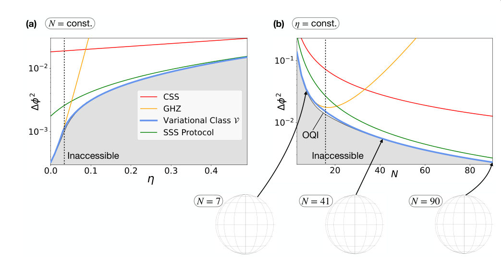
<figcaption class="paper-figure-caption"><b>Fig 2.</b> FIG. 2. Phase-estimation variances ∆ϕ2 for different initial states, shown on logarithmic axes. The CSS curve (red) gives the classical bound for uncorrelated atoms, while the OQI marks the optimum over permutationally symmetric initial states and bounds the inaccessible gray region. The variational optimum within V (blue) is compared to GHZ states (orange) and the optimized SSS protocol (green). (a) Fixed ensemble size N = 55, with varying spontaneous-emission strength η. The dotted line indicates the crossover within V from GHZ-like states at weak noise to SGSs, and eventually SSS-like states, at stronger noise. (b) Fixed noise strength η = 0.13, with varying ensemble size N. The optimum...</figcaption>
</figure>
<figure class="paper-figure-card">
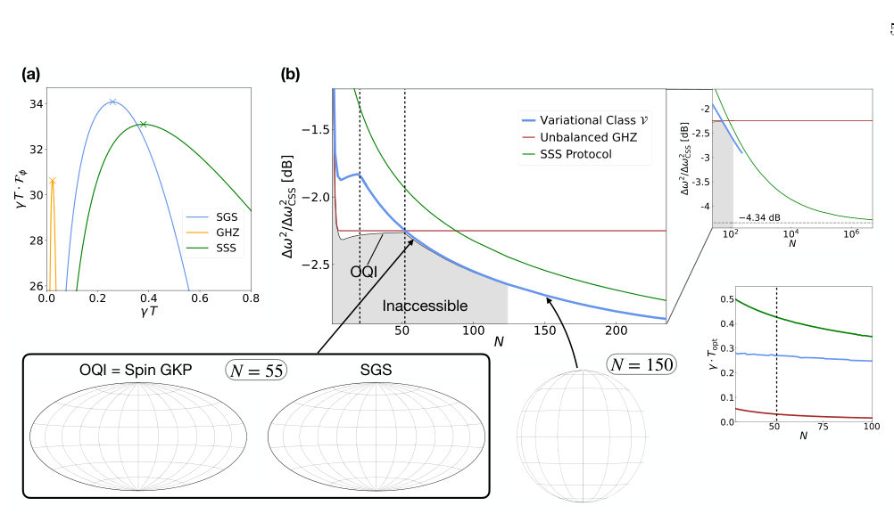
<figcaption class="paper-figure-caption"><b>Fig 3.</b> FIG. 3. (a) Dependence of the optimal interrogation time on the initial state for N = 55. The marked maxima represent the Fω values of the respective states. Here, the SGS is created with the gate parameters (µ1, ϕx, µ2) = (0.073, −0.939, 3π/11). For the SSS, the squeezed axis is aligned along y and the squeezing strength is µ = 0.049. (b) Frequency estimation variances expressed as the gain in decibels over classical strategies. The OQI is defined as the ultimate lower bound across all permutationally symmetric initial states, so the grey shaded region is not accessible. Taking advantage of block diagonal structures, it was possible to numerically determine the OQI for ensembles with more...</figcaption>
</figure>
<figure class="paper-figure-card">
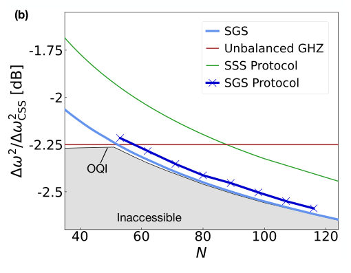
<figcaption class="paper-figure-caption"><b>Fig 4.</b> FIG. 4. (a) Algorithm to estimate the phase with SGSs. Entanglement generated by Tz,tot encodes the number n of decayed clock qubits onto the ancillary system. An inverse QFT is then used to map this information to a Dicke ba- sis state. Measuring the spin projection Sz,A determines n, and conditioned to this result an optimal entangling unitary U(n) ent is applied to estimate the phase. (b) Phase readout strategy compared to the frequency estimation bounds from Fig. 3 (b). The “SGS Protocol” refers to the classical FI with respect to the algorithm in (a), optimized over the pa- rameters of the gates U(n) ent . We did the optimization for N = 53, 62, 71, 80, 89, 98, 107, and 116 clock...</figcaption>
</figure>
<figure class="paper-figure-card">
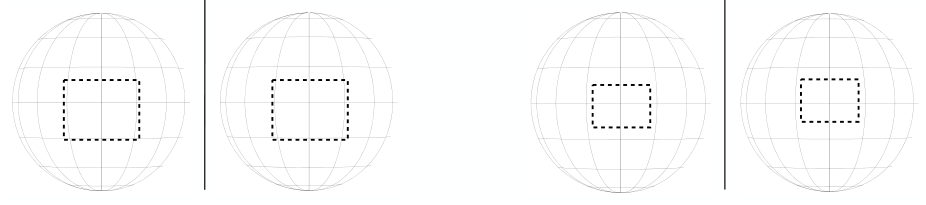
<figcaption class="paper-figure-caption"><b>Fig 5.</b> FIG. 5. Initial state of the OQI (right column, here with a possible trivial rotation about z to align the state along x) and optimal initial state within the spin GKP ansatz class (left column) for (a) N = 53 qubits and (b) N = 100 qubits. Optimal means that the QFI of frequency estimation, Fω, is maximized and thus the estimation uncertainty is minimized. The same periodic grid structure exhibited by the OQI can be reproduced by spin GKP states, see the Wigner function plots (view plane: YZ) on the Bloch sphere and particularly the dashed boxed regions around the optimal working point at the equator, which have exactly the same size for the OQI and the spin GKP state. For larger N, the...</figcaption>
</figure>
</div>

<p><strong>Summary.</strong> This paper develops a quantum metrology protocol for atomic clocks limited by spontaneous emission noise. It identifies Spin Grid States (SGSs) as near-optimal probes that surpass standard entangled states like GHZ states. The authors propose a practical readout technique that leverages the grid structure of SGSs to nearly saturate the ultimate quantum sensitivity limit.</p>
<p><strong>Why it may be interesting.</strong> This work provides concrete, experimentally implementable quantum states (SGSs) that overcome the limitations imposed by realistic noise channels (spontaneous emission) in quantum sensing platforms like atomic clocks.</p>
<details>
<summary>Detailed structure</summary>
<p><strong>Main problem.</strong> The paper addresses the challenge of maximizing precision in phase and frequency estimation using atomic clocks that are fundamentally limited by spontaneous emission noise.</p>
<p><strong>Main result.</strong> Spin Grid States (SGSs) are identified as practical, near-optimal quantum probes that significantly enhance metrological sensitivity compared to standard states, especially for intermediate and large atomic ensembles.</p>
<p><strong>Method.</strong> The authors optimize the Quantum Fisher Information (QFI) over a variational class of states and propose a sequential readout strategy using an OAT echo to distinguish decay events.</p>
<p><strong>Model / system.</strong> The system is an ensemble of N identical two-level atoms (qubits) undergoing spontaneous emission, modeled by a master equation incorporating jump operators. The analysis compares SGSs to GHZ and SSS states.</p>
<p><strong>Key observables.</strong> Quantum Fisher Information ($F_\phi$), phase estimation variance ($\Delta\phi^2$), and the success probability of state discrimination ($P_{	ext{succ, PGM}}$).</p>
<p><strong>Important parameters / regimes.</strong> Spontaneous emission strength ($\eta = \gamma T$), ensemble size ($N$), and the crossover point where state optimality changes ($N=51$).</p>
<p><strong>Assumptions / limitations.</strong> The analysis focuses on permutationally symmetric states and utilizes the Holstein-Primakoff approximation to relate optimal states to spin GKP states.</p>
<p><strong>Figures summary.</strong> Figures illustrate the two-step creation of SGSs on the Bloch sphere, compare the QFI for various states (GHZ, SGS, SSS) versus noise ($\eta$) and size ($N$), and show the high distinguishability of SGS jump terms.</p>
<p><strong>Paper structure.</strong> The paper progresses from establishing the metrological problem under noise, identifying SGSs as superior probes over GHZ states at intermediate noise levels, detailing the generation protocol using OAT operations, and finally presenting a readout strategy that achieves near-perfect distinguishability of decay events.</p>
</details>
<details>
<summary>Abstract</summary>
<p>Entanglement can enhance precision in phase estimation and in frequency estimation with atomic clocks, but it remains a central challenge to identify useful states and measurements under realistic noise processes. Here, we study quantum metrology with an ensemble of atoms subject to spontaneous emission, which limits frequency estimation by constraining the useful interrogation time. We identify spin grid states (SGSs) as the relevant near-optimal probes beyond a crossover at an ensemble size of 51, where GHZ-like states cease to be optimal. SGSs display a periodic grid on the Bloch sphere and can be generated with two one-axis-twisting (OAT) operations separated by a collective rotation. By optimizing the quantum Fisher information over permutationally symmetric states, we find that SGSs perform close to the globally optimal probes for intermediate and large ensembles, which turn out to be spin GKP states. We further present a sequential readout strategy that nearly saturates the corresponding quantum Fisher information. This strategy uses an OAT echo to map spontaneous-emission events onto collective rotations, making the corresponding jump sectors distinguishable and allowing the measurement basis to be conditioned on the number of decay events. Together, these results show that SGSs provide a practical route to quantum-enhanced phase and frequency metrology in atomic ensembles limited by spontaneous emission.</p>
</details>
<p><sub><a href="#top">↑ back to top</a></sub></p>

<p><a id="paper-2609.16668"></a></p>
<h3 id="1f-frequency-noise-in-mechanical-resonators-scales-inversely-with-volume-not-with-quality-factor"><a href="http://arxiv.org/abs/2609.16668v1">1/f frequency noise in mechanical resonators scales inversely with volume, not with quality factor</a></h3>
<p><strong>Authors:</strong> M. L. Roukes<br>
<strong>Type:</strong> both · <strong>Category:</strong> other · <strong>PDF:</strong> <a href="https://arxiv.org/pdf/2609.16668v1">https://arxiv.org/pdf/2609.16668v1</a><br>
<strong>Analysis basis:</strong> full PDF text, analyzed in chunks
<strong>Topic relevance:</strong> <code>quantum measurements</code> <strong>2/5</strong> · <code>analog quantum simulation</code> <strong>1/5</strong></p>
<div class="figure-strip-hint">↔ Scroll figures horizontally</div>
<div class="paper-figures-scroll">
<figure class="paper-figure-card">
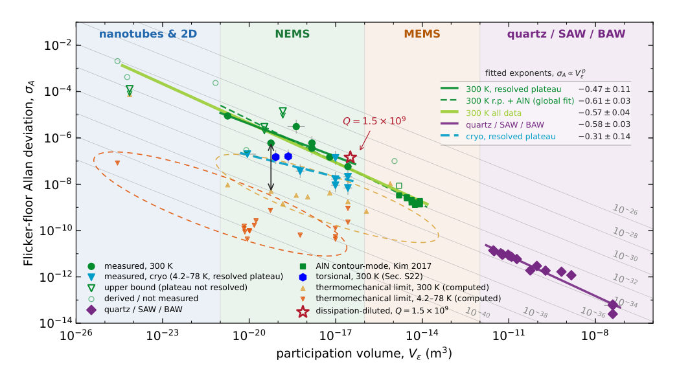
<figcaption class="paper-figure-caption"><b>Fig 1.</b> FIG. 1. (Color online) The 1/f-floor of the Allan deviation, σA, for every mechanical resonator in the published record satisfying the stated, uniformly-applied “admission rules” (SM S1), plotted against participation volume Vε (see text). This figure yields three principal conclusions: First, no device reaches its own thermomechanical limit: both dashed ellipses, which enclose the computed limits, lie entirely below the measured room-temperature floors. For illustration, a vertical black arrow marks a 2.08-decade gap for one device. Second, each family falls with a slope near −1/2, the intra-family exponents and their standard errors being given in the key at upper right. Third, no...</figcaption>
</figure>
<figure class="paper-figure-card">
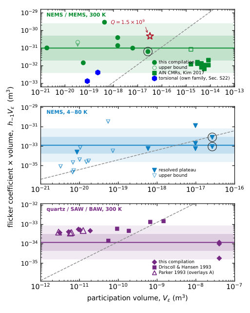
<figcaption class="paper-figure-caption"><b>Fig 2.</b> FIG. 2. (Color online) The data of Fig. 1, replotted as the in- variant h−1 Vε ≡σ2 AVε/(2 ln 2), with one family per panel, to test the participation-volume invariance of h−1 Vε. Two prin- cipal conclusions can be drawn: First, h−1 Vε is flat within each family: the horizontal line is the family reference — the median over independent studies, one value per study, so that no single series sets a family level — and the shaded bands are ±1σ and ±2σ of the scatter of the fitted devices about it (±0.7, ±0.9, ±0.4 decades, top to bottom). Second, the volume-independent alternative fails in all three. The gray dashed slope-+1 line, which h−1 Vε would follow were h−1 in- dependent of volume,...</figcaption>
</figure>
</div>

<p><strong>Summary.</strong> This paper investigates the fundamental limits of frequency stability in mechanical resonators, finding that the dominant $1/f$ noise floor scales universally with the material and geometry, independent of the device's physical volume. The research establishes a key invariant quantity that suggests the noise is governed by intrinsic material properties rather than simple geometric scaling. This has implications for designing next-generation, ultra-sensitive quantum sensors.</p>
<p><strong>Why it may be interesting.</strong> While focused on classical mechanics and materials science, the analysis of noise sources, scaling laws, and fundamental limits of measurement precision touches upon concepts of decoherence and noise floor characterization relevant to quantum sensing.</p>
<details>
<summary>Detailed structure</summary>
<p><strong>Main problem.</strong> Mechanical frequency-shift sensors are limited by a persistent, high $1/f$ noise floor that exceeds fundamental thermomechanical or quantum limits.</p>
<p><strong>Main result.</strong> The excess $1/f$ noise floor, characterized by the product $h^{-1} V_{\epsilon}$, is found to be remarkably independent of the device's physical volume over many decades of size.</p>
<p><strong>Method.</strong> The study analyzes a large dataset of mechanical resonators, fitting the scaling of the noise floor ($\sigma_A$) against device volume ($V$) and comparing results against theoretical scaling predictions.</p>
<p><strong>Model / system.</strong> The system involves mechanical resonators (NEMS/MEMS) whose frequency shifts are monitored. The noise is modeled as arising from an ensemble of fluctuating defects (fluctuators) within the material.</p>
<p><strong>Key observables.</strong> The excess $1/f$ frequency noise ($\sigma_A$), characterized by the Allan deviation plateau $\sigma_A \propto h^{-1}$, and the invariant product $h^{-1} V_{\epsilon}$.</p>
<p><strong>Important parameters / regimes.</strong> Device volume ($V$), strain-weighted volume integral ($V_{\epsilon}$), Quality Factor ($Q$), and the noise scaling exponent ($p$).</p>
<p><strong>Assumptions / limitations.</strong> The noise is assumed to originate from an ensemble of fluctuators with log-uniformly distributed correlation times, and that the noise plateau is parametric in origin.</p>
<p><strong>Figures summary.</strong> Figures plot the $1/f$-floor noise versus participation volume, demonstrating a volume-invariant trend, and analyze scaling trends against theoretical predictions.</p>
<p><strong>Paper structure.</strong> The paper establishes the problem of noise limitation, surveys existing data to test scaling laws (volume vs. Q), derives the volume-invariant scaling law, and discusses the implications for mass resolution and noise cancellation techniques.</p>
</details>
<details>
<summary>Abstract</summary>
<p>Mechanical frequency-shift sensors have never reached their fundamental thermomechanical or quantum limits. Every material, size, and transduction scheme yet examined yields a $1/f$ floor 1-3 orders higher, with a flicker-noise coefficient $h_{-1} \propto 1/V_{\varepsilon}$. Surveying the published record, I find the invariant $h_{-1}\,V_{\varepsilon} \equiv σ_A ^2\, V_{\varepsilon}/(2\ln 2)$ independent of device size across 13 decades; volume-independent noise is excluded by 9$σ$, site-averaging by 3.8$σ$. No $Q$ dependence appears: reported $Q^{-n}$ laws scale equivalently when $Q$ and volume co-vary; only volume scaling survives when they do not. Mass resolution follows as $|δm| \propto \sqrt{h_{-1}\,V_{\varepsilon} \cdot V}$.</p>
</details>
<p><sub><a href="#top">↑ back to top</a></sub></p>

<p><a id="paper-2609.16593"></a></p>
<h3 id="weak-ferromagnetism-in-the-square-lattice-heisenberg-math505math-math506math-math507math-model-with-easy-axis-single-ion-anisotropy"><a href="http://arxiv.org/abs/2609.16593v1">Weak ferromagnetism in the square-lattice Heisenberg $J_1$-$J_2$-$J_2^\prime$ model with easy-axis single-ion anisotropy</a></h3>
<p><strong>Authors:</strong> Bin-Zhou Mi, Qiang Gu<br>
<strong>Type:</strong> theory · <strong>Category:</strong> other · <strong>PDF:</strong> <a href="https://arxiv.org/pdf/2609.16593v1">https://arxiv.org/pdf/2609.16593v1</a><br>
<strong>Analysis basis:</strong> full PDF text, analyzed in chunks
<strong>Topic relevance:</strong> <code>Keldysh / 2PI / non-Gaussian methods</code> <strong>2/5</strong> · <code>analog quantum simulation</code> <strong>1/5</strong></p>
<div class="figure-strip-hint">↔ Scroll figures horizontally</div>
<div class="paper-figures-scroll">
<figure class="paper-figure-card">
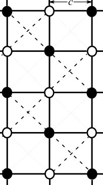
<figcaption class="paper-figure-caption"><b>Fig 1.</b> Fig. 1. The magnetic atoms, shown as solid white and black circles, constitute a square lattice in the xy plane, with the magnetic easy-axis along the z-direction. The parameter 𝐽1 denotes the nn antiferromagnetic exchange interaction, while 𝐽2 and 𝐽2</figcaption>
</figure>
<figure class="paper-figure-card">
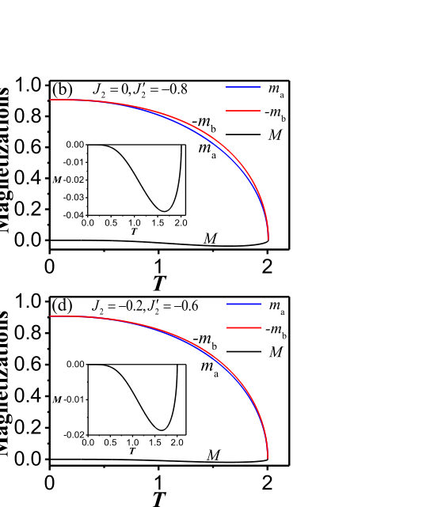
<figcaption class="paper-figure-caption"><b>Fig 2.</b> Fig. 3. (Color online) Temperature dependence of magnetizations, including sublattice magnetization and net magnetization, for 𝑆= 1 and 𝐷= 0.08 with 𝐽2 + 𝐽2</figcaption>
</figure>
<figure class="paper-figure-card">
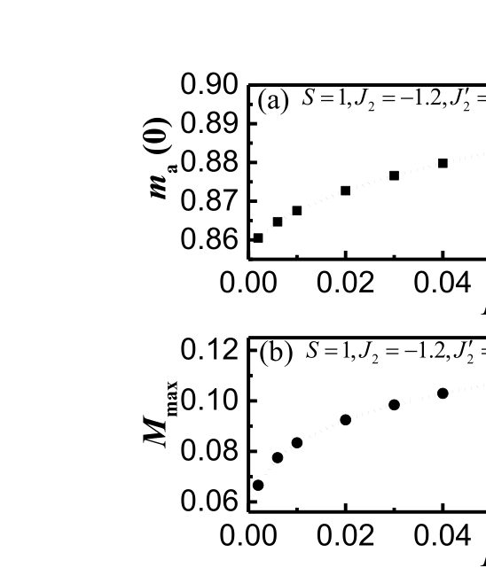
<figcaption class="paper-figure-caption"><b>Fig 3.</b> Fig. 5. The variation of (a) 𝑚𝑎(0) and (b) 𝑀max with 𝐷 for 𝑆= 1, 𝐽2 = −1.2, and 𝐽2</figcaption>
</figure>
</div>

<p><strong>Summary.</strong> This theoretical study analyzes weak ferromagnetism in a complex Heisenberg model on a square lattice. The authors find that the asymmetry between two next-nearest-neighbor couplings ($J_2 
eq J_2'$) is the source of temperature-dependent net magnetization. The findings suggest a material mechanism for weak ferromagnetism that can be detectable in real quantum magnetic materials.</p>
<p><strong>Why it may be interesting.</strong> The mechanism for weak ferromagnetism—arising from distinct superexchange pathways mediated by different nonmagnetic atoms—offers a novel theoretical pathway distinct from conventional interactions like the Dzyaloshinskii-Moriya interaction.</p>
<details>
<summary>Detailed structure</summary>
<p><strong>Main problem.</strong> The study investigates the origin and temperature dependence of weak ferromagnetism in a specific Heisenberg spin model on a square lattice.</p>
<p><strong>Main result.</strong> Weak ferromagnetism at finite temperatures is primarily caused by the asymmetry between two distinct next-nearest-neighbor exchange couplings ($J_2 
eq J_2'$), while the single-ion anisotropy ($D$) only provides a background for long-range order.</p>
<p><strong>Method.</strong> The research employs numerical calculations using the Double-Time Green's Function (DTGF) method, incorporating Random Phase Approximation (RPA) and Anderson-Callen's (ACs) decoupling.</p>
<p><strong>Model / system.</strong> The system is the square-lattice Heisenberg $J_1$-$J_2$-$J_2'$ model, including nearest-neighbor ($J_1$), two alternating next-nearest-neighbor ($J_2, J_2'$), and easy-axis single-ion anisotropy ($D$).</p>
<p><strong>Key observables.</strong> Sublattice magnetization, net magnetization ($M$), and critical temperature ($T_C$).</p>
<p><strong>Important parameters / regimes.</strong> The relative difference $|J_2 - J_2'|$ is key; $D$ controls the background ordering; $S$ (spin quantum number) and $T$ (temperature) are varied.</p>
<p><strong>Assumptions / limitations.</strong> The calculations rely on the RPA and ACs decoupling approximations of the DTGF method, and the model is analyzed for $S \ge 1$ due to the anisotropy term.</p>
<p><strong>Figures summary.</strong> Figures illustrate the temperature dependence of magnetizations for various coupling ratios, and show how ground-state magnetizations and maximum net magnetization scale with the spin quantum number $S$ and anisotropy $D$.</p>
<p><strong>Paper structure.</strong> The paper systematically analyzes the magnetic behavior by first establishing the model and methods, then demonstrating that $J_2 
eq J_2'$ drives finite-temperature weak ferromagnetism, and finally quantifying the dependence of $M_{max}$ and $T_C$ on the coupling parameters and spin quantum number.</p>
</details>
<details>
<summary>Abstract</summary>
<p>Motivated by recent experimental realizations of the Heisenberg model and two-dimensional altermagnetism using ultracold atoms in optical lattices, we systematically investigate the magnetic properties of the square-lattice Heisenberg $J_1$-$J_2$-$J_2^\prime$ model in the presence of easy-axis single-ion anisotropy $D$. Here, $J_1 (>0)$ is the nearest-neighbor antiferromagnetic exchange parameter, while $J_2$ and $J_2^\prime$ are two distinct next-nearest-neighbor superexchange parameters that alternate on the lattice. We perform numerical calculations of the sublattice magnetization, net magnetization, and critical temperature. Interestingly, the net magnetization is not identically zero at finite temperatures; its absolute value first increases and then decreases with increasing temperature, revealing a temperature-dependent weak ferromagnetism. We find that $J_2\not=J_2^\prime$ is the primary factor responsible for weak ferromagnetism at finite temperatures, while $D$ provides the necessary background for two-dimensional long-range magnetic ordering. Moreover, for a fixed $J_2+J_2^\prime$, we observe that a larger $|J_2-J_2^\prime|$ leads to a greater maximum net magnetization and critical temperature, as well as a broader temperature range for weak ferromagnetism. The difference between $J_2$ and $J_2^\prime$ originates from the distinct superexchange pathways between magnetic atoms, with these pathways mediated by two different types of nonmagnetic atoms. This mechanism, which differs from conventional ones such as the Dzyaloshinskii-Moriya interaction, may be detectable in real materials.</p>
</details>
<p><sub><a href="#top">↑ back to top</a></sub></p>

<p><a id="paper-2609.16490"></a></p>
<h3 id="a-complete-classification-of-the-existence-of-finite-dimensional-quantum-solutions-to-inconsistent-linear-constraint-systems"><a href="http://arxiv.org/abs/2609.16490v1">A complete classification of the existence of finite-dimensional quantum solutions to inconsistent linear constraint systems</a></h3>
<p><strong>Authors:</strong> Markus Frembs<br>
<strong>Type:</strong> theory · <strong>Category:</strong> quantum information and computing · <strong>PDF:</strong> <a href="https://arxiv.org/pdf/2609.16490v1">https://arxiv.org/pdf/2609.16490v1</a><br>
<strong>Analysis basis:</strong> full PDF text, analyzed in chunks
<strong>Topic relevance:</strong> <code>quantum measurements</code> <strong>2/5</strong></p>
<div class="figure-strip-hint">↔ Scroll figures horizontally</div>
<div class="paper-figures-scroll">
<figure class="paper-figure-card">
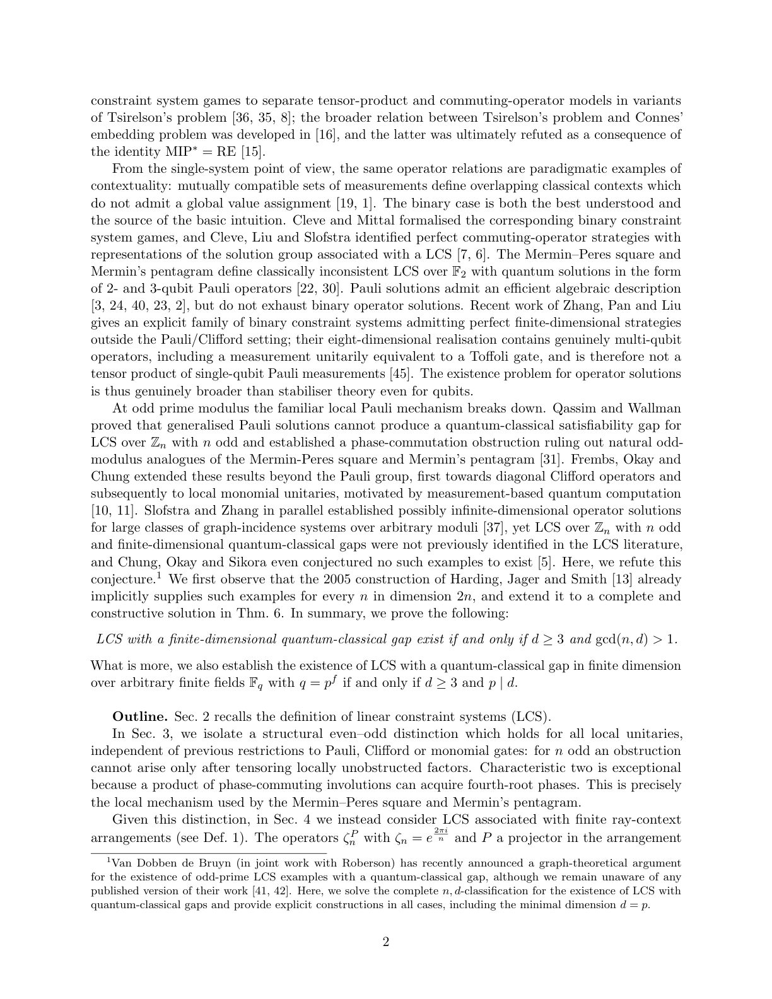
<figcaption class="paper-figure-caption"><b>Fig 1.</b> Low-resolution page preview, page 2</figcaption>
</figure>
<figure class="paper-figure-card">
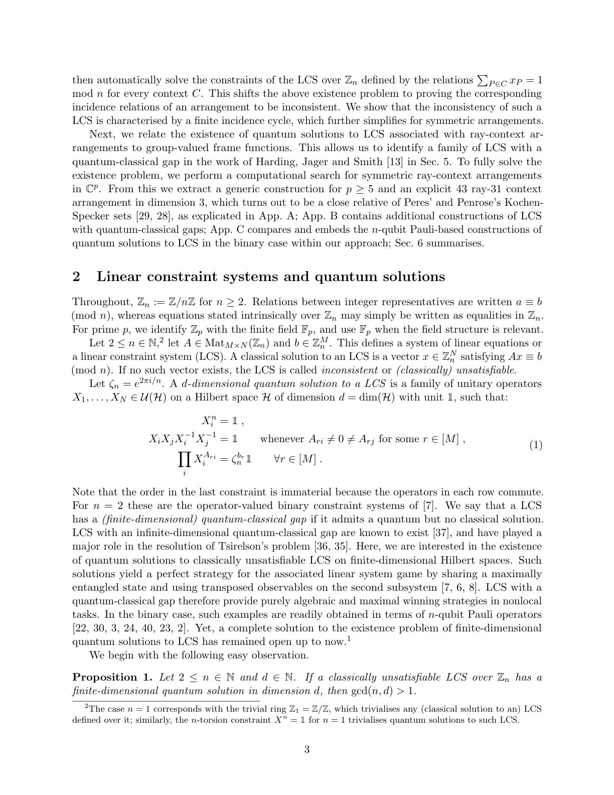
<figcaption class="paper-figure-caption"><b>Fig 2.</b> Low-resolution page preview, page 3</figcaption>
</figure>
<figure class="paper-figure-card">
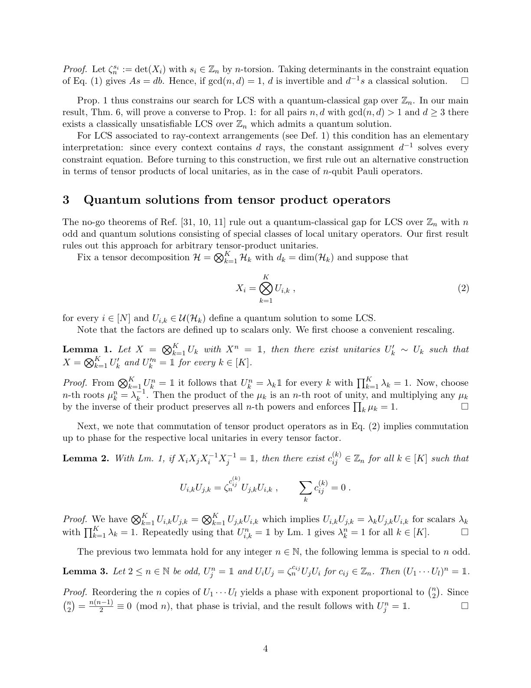
<figcaption class="paper-figure-caption"><b>Fig 3.</b> Low-resolution page preview, page 4</figcaption>
</figure>
<figure class="paper-figure-card">
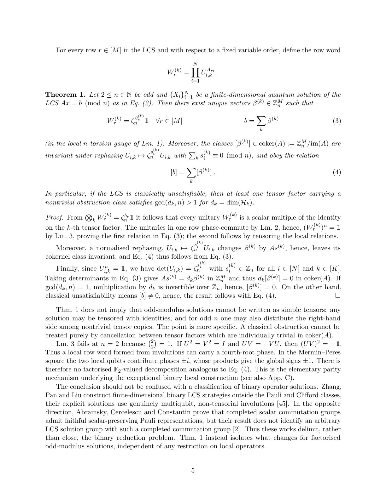
<figcaption class="paper-figure-caption"><b>Fig 4.</b> Low-resolution page preview, page 5</figcaption>
</figure>
<figure class="paper-figure-card">
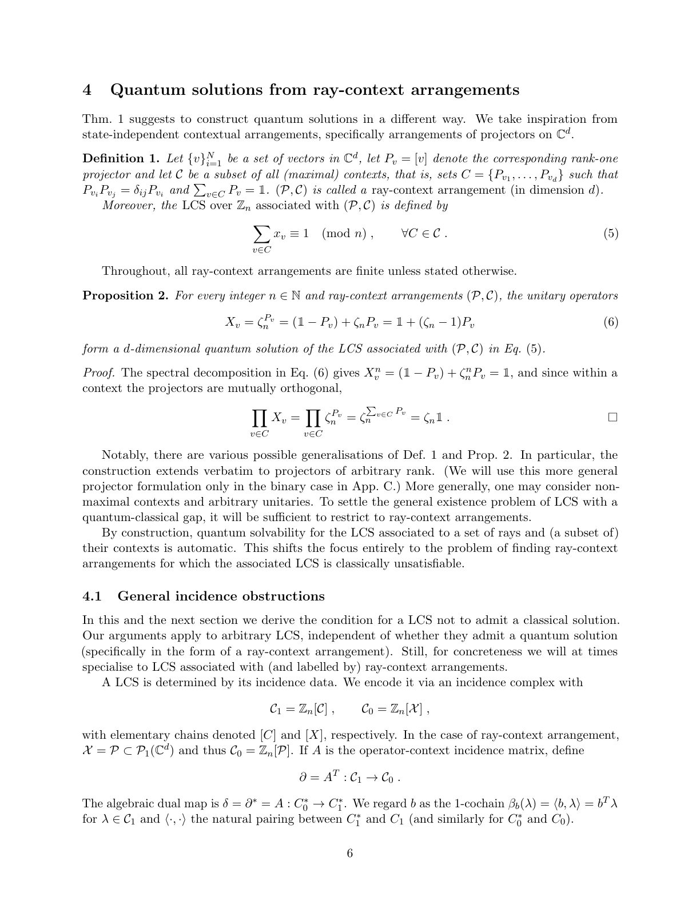
<figcaption class="paper-figure-caption"><b>Fig 5.</b> Low-resolution page preview, page 6</figcaption>
</figure>
</div>

<p><strong>Summary.</strong> This theoretical paper classifies when quantum systems can violate classical constraints defined by linear systems over $\mathbb{Z}_n$. It establishes that a quantum-classical gap exists if and only if the dimension $d$ is large enough and shares a common factor with the modulus $n$. The methodology relies on advanced algebraic tools applied to the structure of quantum contextuality.</p>
<p><strong>Why it may be interesting.</strong> This work provides deep mathematical constraints on the feasibility of quantum correlations (contextuality) that cannot be captured by classical probability distributions, directly impacting the understanding of quantum information protocols.</p>
<details>
<summary>Detailed structure</summary>
<p><strong>Main problem.</strong> The paper aims to provide a complete classification of the existence of finite-dimensional quantum solutions to inconsistent linear constraint systems (LCS).</p>
<p><strong>Main result.</strong> The existence of such systems with a quantum-classical gap is characterized by the condition that the dimension $d$ must be at least 3 and $\gcd(n, d) > 1$.</p>
<p><strong>Method.</strong> The authors use algebraic methods, relating LCS to finite arrangements of rank-one projectors and analyzing obstructions using group theory and cohomology.</p>
<p><strong>Model / system.</strong> The model involves Linear Constraint Systems (LCS) defined over $\mathbb{Z}_n$, which are used to characterize nonlocal games and contextuality in quantum systems.</p>
<p><strong>Key observables.</strong> The context phase vector ($b_C$), the Pauli multiplication cocycle ($eta$), and the greatest common divisor $\gcd(n, d)$ are key diagnostics.</p>
<p><strong>Important parameters / regimes.</strong> The modulus $n$ (e.g., $\mathbb{Z}_n$), the Hilbert space dimension $d$, and the prime $p$ are critical parameters.</p>
<p><strong>Assumptions / limitations.</strong> The analysis distinguishes between odd and even moduli, and the results are often derived by associating the LCS to specific 'ray-context arrangements'.</p>
<p><strong>Figures summary.</strong> Not specified (Analysis relies heavily on algebraic structures and theorems rather than described figures).</p>
<p><strong>Paper structure.</strong> The paper progresses by first analyzing the general structure of obstructions to classical solutions, then specializing to tensor-product structures for odd moduli, and finally establishing the necessary and sufficient conditions for the existence of quantum-classical gaps using projector resolutions.</p>
</details>
<details>
<summary>Abstract</summary>
<p>Linear constraint systems (LCS) provide a compact algebraic language for nonlocal games and state-independent contextuality. In the binary case the Mermin--Peres square shows that inconsistent LCS can be solved by promoting variables to local Pauli operators, whereas a series of no-go results excludes analogous Pauli-, Clifford- and monomial unitary-based constructions at odd prime modulus. We first isolate the reason for this difference: for tensor-product quantum solutions, the obstruction to a classical solution of a LCS over $\mathbb{Z}_n$ decomposes into obstruction classes carried by the individual factors. As a consequence, a genuinely global obstruction cannot arise solely by tensoring locally unobstructed systems. The argument is specific to odd modulus; at even modulus the reordering phase need not vanish, as in Pauli-based examples.   Given this distinction, we instead associate LCS to finite arrangements of rank-one projectors and resolutions of the identity in finite-dimensional vector spaces. Quantum solvability for such LCS is automatic and the search for a quantum-classical gap rests entirely on proving classical unsatisfiability of the underlying modular incidence problem of the arrangement. By relating such LCS with group-valued frame functions, we identify a family of examples in the work of [Harding, Jager, and Smith, Int. J. Theor. Phys. 44, 539 (2005)]. To establish the (non)existence of classically unsatisfiable LCS over $\mathbb{Z}_n$ with quantum solutions in all dimensions $d$ and for all $n\in\mathbb{N}$, we further construct explicit examples for the cases $d=n$ prime. Our main result thus positively resolves the existence problem of such LCS beyond the binary case: such systems exist if and only if $d\geq 3$ and $\gcd(n,d)>1$. Moreover, we establish the existence of LCS with a quantum-classical gap over finite fields if and only if $d\geq 3$ and $p\mid d$.</p>
</details>
<p><sub><a href="#top">↑ back to top</a></sub></p>

<p><a id="paper-2609.17498"></a></p>
<h3 id="antidistinguishability-of-states-in-general-probabilistic-theories"><a href="http://arxiv.org/abs/2609.17498v1">Antidistinguishability of states in General Probabilistic Theories</a></h3>
<p><strong>Authors:</strong> Satyaki Manna, Anandamay Das Bhowmik<br>
<strong>Type:</strong> theory · <strong>Category:</strong> other · <strong>PDF:</strong> <a href="https://arxiv.org/pdf/2609.17498v1">https://arxiv.org/pdf/2609.17498v1</a><br>
<strong>Analysis basis:</strong> full PDF text, analyzed in chunks
<strong>Topic relevance:</strong> <code>quantum measurements</code> <strong>2/5</strong></p>
<div class="figure-strip-hint">↔ Scroll figures horizontally</div>
<div class="paper-figures-scroll">
<figure class="paper-figure-card">
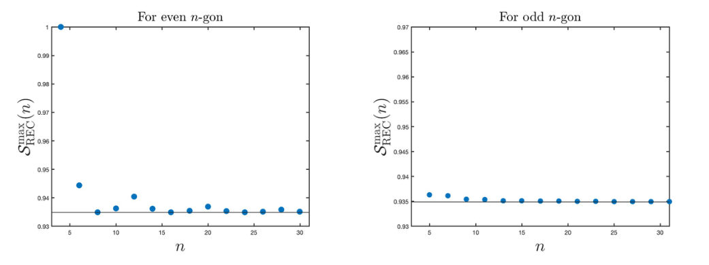
<figcaption class="paper-figure-caption"><b>Fig 1.</b> FIG. 1: The optimal success merit of REC for even (left) and odd n-gon (right) under dichotomic measurement implemented by Bob. The constant black line corresponds to the optimal success merit of the task using qubit states and measurements. At lower n, the success merit has a greater value. Note that the nature of the convergence of the merit is different for even and odd n-gon.</figcaption>
</figure>
</div>

<p><strong>Summary.</strong> This paper rigorously investigates 'antidistinguishability' within the general framework of physical theories (GPTs). It develops mathematical tools to characterize this property, particularly for polygonal state models. The research shows that while these models can sometimes outperform quantum predictions for small systems, their performance converges back to the quantum limit as the system size increases.</p>
<p><strong>Why it may be interesting.</strong> This work is highly relevant to foundational quantum physics, as it extends the operational constraints beyond standard quantum mechanics (GPTs) to characterize when and how non-quantum theories can mimic or surpass quantum predictions in specific tasks.</p>
<details>
<summary>Detailed structure</summary>
<p><strong>Main problem.</strong> The paper investigates the concept of 'antidistinguishability' of quantum states within the general framework of General Probabilistic Theories (GPTs). It refines this notion to study its mathematical properties and physical implications.</p>
<p><strong>Main result.</strong> The authors establish general bounds on the size of equally antidistinguishable sets and demonstrate that polygonal models can exhibit nonclassical behavior by outperforming the optimal quantum limit in certain coding tasks, though this advantage vanishes in the large-polygon limit.</p>
<p><strong>Method.</strong> The methodology involves defining and analyzing refined notions of antidistinguishability (strong and equal), applying these concepts to specific models like polygonal theories, and using Random Exclusion Codes (REC) to probe nonclassicality.</p>
<p><strong>Model / system.</strong> The primary model is the General Probabilistic Theory (GPT), which encompasses quantum mechanics. Specific applications are studied using polygonal state spaces (n-gons) and the associated measurement effects.</p>
<p><strong>Key observables.</strong> Antidistinguishability, strong antidistinguishability, equal antidistinguishability, and the success merit of Random Exclusion Codes ($S_{\max}^{	ext{REC}}(n)$).</p>
<p><strong>Important parameters / regimes.</strong> The number of sides of the polygon ($n$), the affine dimension of the state space ($d$), and the quantum limit value ($S_C^{	ext{REC}} = 8/9$).</p>
<p><strong>Assumptions / limitations.</strong> The analysis is conducted within the operational framework of GPTs, assuming the state space $\Omega$ is convex and compact.</p>
<p><strong>Figures summary.</strong> Figure 1 plots the optimal success merit of REC ($S_{\max}^{	ext{REC}}(n)$) versus $n$ for even and odd $n$-gons, comparing it against the established qubit line. Table I summarizes the antidistinguishability properties for various $n$-gon models.</p>
<p><strong>Paper structure.</strong> The paper first introduces the concept of antidistinguishability in GPTs, deriving general relationships between its refined notions. It then applies these concepts to polygonal theories, proving specific results about the antidistinguishability of pure states. Finally, it uses these results to analyze the performance of Random Exclusion Codes, comparing them to the quantum limit.</p>
</details>
<details>
<summary>Abstract</summary>
<p>We investigate antidistinguishability of states within the framework of general probabilistic theories (GPTs). We formulate antidistinguishability, strong and equal antidistinguishability as refined notions that imposed additional constraint on the measurement effects. We establish general results relating these notions of antidistinguishability and derive an upper bound on the cardinality of equally antidistinguishable sets in terms of the affine dimension of the state space. We then study antidistinguishability in polygonal theories, obtaining conditions for antidistinguishability of a set of states. In consequence, we show that the set of all pure states in a polygon model is antidistinguishable. Additionally, we identify broad families of strongly and equally antidistinguishable states. Finally, using Random Exclusion Codes, whose success probability is governed by the antidistinguishability of different sets of encoding states, we probe the nonclassicality of polygon theories. We find that certain polygon models can outperform the optimal quantum value, while their optimal performance converges to the quantum limit in the large-polygon limit.</p>
</details>
<p><sub><a href="#top">↑ back to top</a></sub></p>

<p><a id="paper-2609.17150"></a></p>
<h3 id="observational-indistinguishability-and-integrity-blind-regions-in-hybrid-quantum-classical-workflows"><a href="http://arxiv.org/abs/2609.17150v1">Observational Indistinguishability and Integrity Blind Regions in Hybrid Quantum-Classical Workflows</a></h3>
<p><strong>Authors:</strong> Roberto Fernández-Barrios, Iker Pastor-López, Amaia Pikatza-Huerga, Pablo García Bringas<br>
<strong>Type:</strong> theory · <strong>Category:</strong> quantum information and computing · <strong>PDF:</strong> <a href="https://arxiv.org/pdf/2609.17150v1">https://arxiv.org/pdf/2609.17150v1</a><br>
<strong>Analysis basis:</strong> full PDF text, analyzed in chunks
<strong>Topic relevance:</strong> <code>quantum measurements</code> <strong>2/5</strong></p>
<div class="figure-strip-hint">↔ Scroll figures horizontally</div>
<div class="paper-figures-scroll">
<figure class="paper-figure-card">
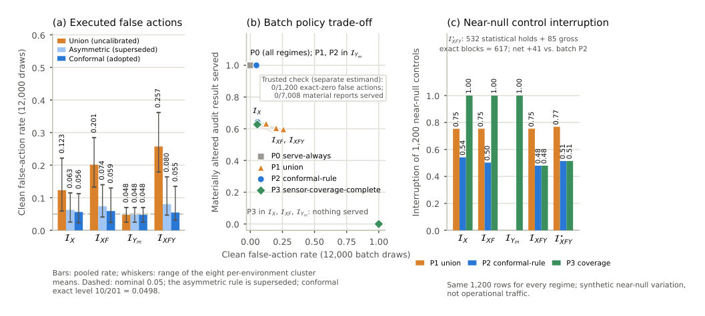
<figcaption class="paper-figure-caption"><b>Fig 1.</b> Fig. 1. Gates F and D (prespecified frozen evidence). (a) Decision-level false-action rate on 12,000 clean draws from evaluation pools disjoint from the calibration pools; resampled draws within each pool may overlap. Union, asymmetric-comparison and conformal rates are shown per regime. (b) Materially altered audit results served versus clean false-action rate at the structural-sensitivity endpoint (12,000-draw batch denominator); the trusted exact-zero check uses 1,200 rows and is a different estimand. (c) Interruption of 1,200 near-null controls; trusted P2 interrupts 617: 532 statistical holds and 85 gross exact blocks.</figcaption>
</figure>
<figure class="paper-figure-card">
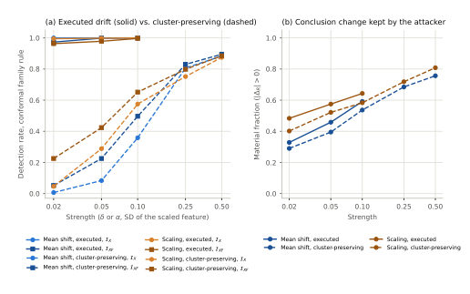
<figcaption class="paper-figure-caption"><b>Fig 2.</b> Fig. 2. Corrected-JSD response on the original frozen Gate A rows. (a) Detection under the conformal family rule of the executed drift mechanisms (solid) and of their cluster-preserving variants (dashed) in IX and IXF , 600 observations per point. (b) Material fraction of the same rows: the construction reduces response against the declared batch-level fingerprint at matched strengths while keeping most of the conclusion changes.</figcaption>
</figure>
</div>

<p><strong>Summary.</strong> This paper proposes a novel, mathematically rigorous framework for verifying the integrity of hybrid quantum-classical workflows against potential adversarial attacks. It defines 'claim-relative' evidence by identifying structural blind regions and establishing necessary reference points (scalar, aggregate, item-level) to guarantee the trustworthiness of computational conclusions. This work is crucial for establishing verifiable trust in future quantum computing applications.</p>
<p><strong>Why it may be interesting.</strong> While highly abstract and focused on security protocols, the rigorous mathematical framework for verifying computational integrity in quantum processes is foundational for building reliable quantum algorithms and quantum information processing pipelines.</p>
<details>
<summary>Detailed structure</summary>
<p><strong>Main problem.</strong> The paper develops a framework to ensure integrity and detect adversarial manipulations within complex hybrid quantum-classical workflows.</p>
<p><strong>Main result.</strong> It introduces a 'claim-relative evidence/reference' lattice that quantifies different levels of integrity protection (conclusion, aggregate, item-identity) against structural blind regions.</p>
<p><strong>Method.</strong> The authors use formal methods, defining structural blind regions and testing integrity using specific reference mechanisms like trusted scalars ($R_0$) and adaptive stress tests.</p>
<p><strong>Model / system.</strong> The model is a general hybrid quantum-classical workflow involving classical record acquisition, quantum evidence generation, kernel learning, and final reporting.</p>
<p><strong>Key observables.</strong> Conclusion-changing label interventions, structural blind regions, and the degree of required reference granularity (scalar vs. aggregate vs. item-aligned).</p>
<p><strong>Important parameters / regimes.</strong> The required reference granularity (e.g., $R_0$ for conclusion integrity) and the detection rates of label interventions (e.g., 343/2,700).</p>
<p><strong>Assumptions / limitations.</strong> The framework assumes the existence of a 'claim-relative' view, but it notes limitations regarding the need for an external root and the violation of exchangeability in the design.</p>
<p><strong>Paper structure.</strong> The paper is structured around defining the integrity lattice, analyzing different types of observational indistinguishability (structural vs. statistical), and demonstrating the sufficiency of different reference mechanisms ($R_0, M_0$, item-aligned binding) through rigorous testing.</p>
</details>
<details>
<summary>Abstract</summary>
<p>We present a claim-relative evidence/reference framework for hybrid quantum-classical workflow integrity. Observational indistinguishability yields structural blind regions, distinct from finite-batch statistical misses. Within the declared lattice, a trusted same-batch scalar $R_0$ suffices for conclusion integrity, aggregate $M_0$ for aggregate plus conclusion integrity, and item-aligned binding for item identity. In 3,600 label interventions, feature/prediction views realize exact label-path invariance; all 764 geometry-aligned aggregate-blind rows equal their paired-clean responses, giving zero attack-only increment. For statistical response, the geometry-aligned construction detects 343/2,700 conclusion-changing ($τ\to 0^+$) label interventions with the conformal rule and 1,183/2,700 with the uncorrected union; the original frozen same-item geometry yields 11/2,617 and 43/2,617, respectively. The executed conformal clean false-action rates are 0.048--0.059 descriptively; its finite-sample guarantee requires exchangeability, which the overlapping-draw design violates. The cluster-preserving adaptive stress test (Gate A) reduces response versus matched controls in 25--40 of 40 environment/split cells while retaining conclusion changes. A bounded 165-design-cell ideal-statevector and finite-shot-emulation branch directly instantiates semantic, estimated and observed kernel transitions. The fixed equal-weight design estimates neither deployment prevalence nor QPU, provider or deployed-service assurance.</p>
</details>
<p><sub><a href="#top">↑ back to top</a></sub></p>

<p><a id="paper-2609.17311"></a></p>
<h3 id="optimal-linear-rate-conversion-of-unknown-mixed-qubit-states-via-swap-tests"><a href="http://arxiv.org/abs/2609.17311v1">Optimal Linear-Rate Conversion of Unknown Mixed Qubit States via SWAP Tests</a></h3>
<p><strong>Authors:</strong> Sujay Kazi, Iman Marvian<br>
<strong>Type:</strong> theory · <strong>Category:</strong> quantum information and computing · <strong>PDF:</strong> <a href="https://arxiv.org/pdf/2609.17311v1">https://arxiv.org/pdf/2609.17311v1</a><br>
<strong>Analysis basis:</strong> full PDF text, analyzed in chunks
<strong>Topic relevance:</strong> <code>quantum measurements</code> <strong>2/5</strong></p>
<div class="figure-strip-hint">↔ Scroll figures horizontally</div>
<div class="paper-figures-scroll">
<figure class="paper-figure-card">
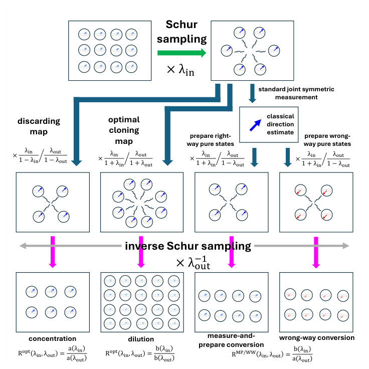
<figcaption class="paper-figure-caption"><b>Fig 1.</b> FIG. 1: A unified presentation of the four linear-rate conversion protocols for qubits. At each step, the qubit count is multiplied approximately by some factor depending on λin and/or λout, and multiplying these factors across the three steps yields the linear conversion rates shown at the bottom. Step (i), unitary Schur sampling, is common across the protocols, and it can be performed solely using two-qubit SWAP tests [29]. Step (ii), rescaling the number of qubits, varies based on the protocol. Step (iii), inverse Schur sampling, is again common across the protocols, and it can be performed by introducing the appropriate number of singlet states and randomly permuting the qubits....</figcaption>
</figure>
<figure class="paper-figure-card">
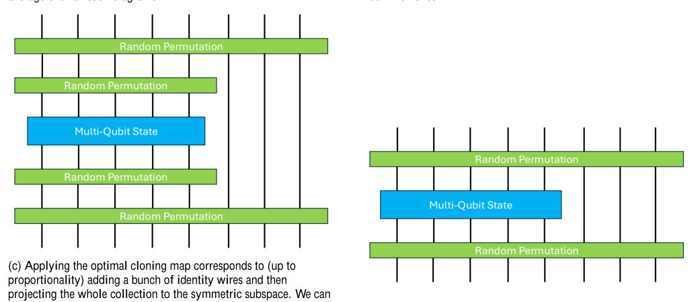
<figcaption class="paper-figure-caption"><b>Fig 2.</b> FIG. 2: The tensor network representation of a state on the symmetric subspace (Figure 2a), followed by an application of either the discarding map (Figure 2b) or the optimal cloning map (Figures 2c and 2d).</figcaption>
</figure>
<figure class="paper-figure-card">
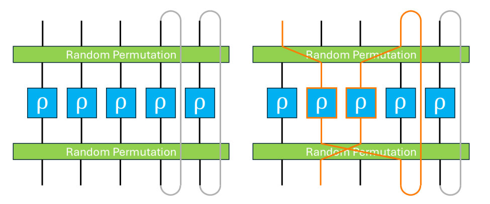
<figcaption class="paper-figure-caption"><b>Fig 3.</b> FIG. 3: (LEFT) The discarding map applied to a Schur-transformed state. Instead of using a generic multi-qubit state, as we did in Figure 2, we now use an i.i.d. collection, which results in a Schur-transformed state (up to proportionality) after projecting to the symmetric subspace. (RIGHT) The essential intuition for why discarding qubits from the Schur-transformed state achieves concentration. Before the discarding map, each wire threads exactly one copy of ρ. But now, each wire can thread multiple copies of ρ due to the wraparound caused by the partial trace. Since each copy of ρ multiplies the coefficient of |1⟩⟨1|ˆn by c1 = 1+λ</figcaption>
</figure>
<figure class="paper-figure-card">
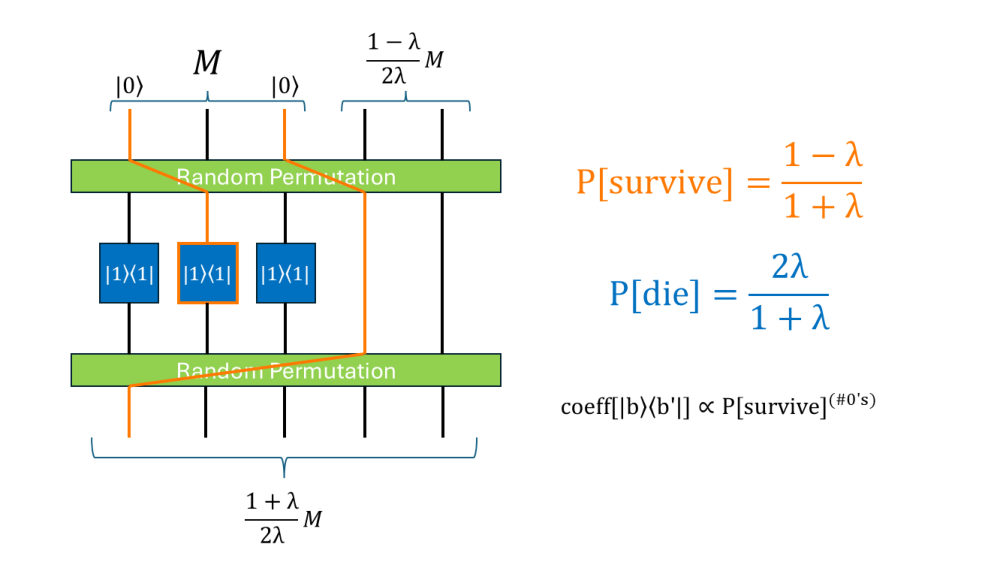
<figcaption class="paper-figure-caption"><b>Fig 4.</b> FIG. 6: An explanation of why applying the optimal cloning map to M i.i.d. pure qubits to increase the qubit count to 1+λ</figcaption>
</figure>
<figure class="paper-figure-card">
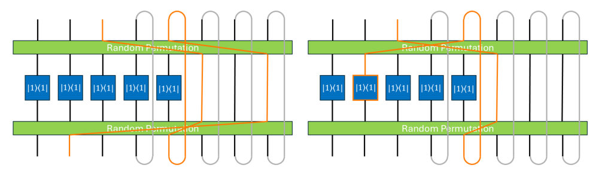
<figcaption class="paper-figure-caption"><b>Fig 5.</b> FIG. 10: (LEFT) An example of a trajectory where the |0⟩ˆn state “wins” by successfully avoiding a |1⟩⟨1|ˆn projector. (RIGHT) An example of a trajectory where the |0⟩ˆn state “loses” by colliding into a |1⟩⟨1|ˆn projector and being annihilated.</figcaption>
</figure>
</div>

<p><strong>Summary.</strong> This work establishes the maximum achievable rates for converting unknown mixed qubit states between different purities (concentration and dilution). The optimal rates are fundamentally governed by the eigenvalues of the RLD Fisher information matrix. Crucially, the authors show that these state conversions can be implemented using only SWAP tests, offering a deep operational understanding of quantum state geometry.</p>
<p><strong>Why it may be interesting.</strong> It provides a novel operational interpretation of the full complex RLD Fisher information matrix, linking its geometric properties to fundamental quantum information tasks like state concentration and dilution.</p>
<details>
<summary>Detailed structure</summary>
<p><strong>Main problem.</strong> The paper determines the maximum linear rate at which unknown mixed qubit states can be converted between different purity levels (concentration or dilution).</p>
<p><strong>Main result.</strong> The optimal conversion rates are determined by the eigenvalues of the complex right-logarithmic-derivative (RLD) Fisher information matrix, and these conversions can be achieved using only SWAP tests.</p>
<p><strong>Method.</strong> The analysis involves establishing a three-step protocol (Schur sampling, applying a specific channel like cloning/discarding, and inverse Schur sampling) and proving the maximum rate by showing the trace distance vanishes in the infinite copy limit.</p>
<p><strong>Model / system.</strong> The system involves unknown mixed qubit states ($
ho$) and their conversion between states of different purities ($\lambda_{in}   o \lambda_{out}$). The analysis utilizes concepts from quantum information theory, including the RLD Fisher information matrix and SWAP tests.</p>
<p><strong>Key observables.</strong> Linear conversion rates ($R_{	ext{opt}}$), trace distance ($   ext{dTr}$), and the eigenvalues of the RLD Fisher information matrix.</p>
<p><strong>Important parameters / regimes.</strong> Input and output purity levels ($\lambda_{in}, \lambda_{out}$), and the number of copies ($N$).</p>
<p><strong>Assumptions / limitations.</strong> The asymptotic performance relies on the concentration of Schur sampling outcomes, which makes certain error terms exponentially small as $N 	o \infty$.</p>
<p><strong>Figures summary.</strong> Figure 1 provides a unified presentation of four linear-rate conversion protocols, while Figure 2 illustrates tensor network representations for the symmetric subspace related to the state and the discarding map.</p>
<p><strong>Paper structure.</strong> The paper first presents four theorems establishing the maximum rate achievement, followed by a detailed proof bounding the trace distance by decomposing the error into parts related to sampling fluctuations and the core channel operation.</p>
</details>
<details>
<summary>Abstract</summary>
<p>By consuming multiple copies of an unknown qubit state, one can modify its purity while preserving the direction of its Bloch vector. We determine the maximum linear rate at which qubit states of different purities can be interconverted, allowing a nonzero error, quantified, for instance, by the trace distance, provided that it vanishes in the limit of infinitely many copies. Interestingly, the optimal conversion rate is determined by the two eigenvalues of the complex right-logarithmic-derivative (RLD) Fisher information matrix associated with $\mathrm{SU}(2)$ rotations of the qubit state. When the output qubits have higher purity, corresponding to concentration, the optimal rate is given by the ratio of the maximum eigenvalues of the input and output RLD matrices. In contrast, when the output qubits have lower purity, corresponding to dilution, the optimal rate is given by the ratio of their minimum eigenvalues. Remarkably, both concentration and dilution can be implemented using SWAP tests as the only nontrivial two-qubit measurement primitive, together with ancillary qubits initially prepared in maximally mixed states, without requiring any additional two-qubit gates. Our work thus provides a novel operational interpretation of the full complex RLD Fisher information matrix. Crucially, its antisymmetric, purely imaginary part encodes geometric information beyond the statistical distance between density operators and plays an essential role in determining the optimal state-conversion rates.</p>
</details>
<p><sub><a href="#top">↑ back to top</a></sub></p>

<p><a id="paper-2609.17095"></a></p>
<h3 id="probabilistic-error-cancellation-for-single-mode-gottesman-kitaev-preskill-codes"><a href="http://arxiv.org/abs/2609.17095v1">Probabilistic Error Cancellation for Single-Mode Gottesman-Kitaev-Preskill Codes</a></h3>
<p><strong>Authors:</strong> Victoria Wadewitz, Alessandro Ciani<br>
<strong>Type:</strong> theory · <strong>Category:</strong> quantum information and computing · <strong>PDF:</strong> <a href="https://arxiv.org/pdf/2609.17095v1">https://arxiv.org/pdf/2609.17095v1</a><br>
<strong>Analysis basis:</strong> full PDF text, analyzed in chunks
<strong>Topic relevance:</strong> <code>quantum measurements</code> <strong>2/5</strong></p>
<div class="figure-strip-hint">↔ Scroll figures horizontally</div>
<div class="paper-figures-scroll">
<figure class="paper-figure-card">
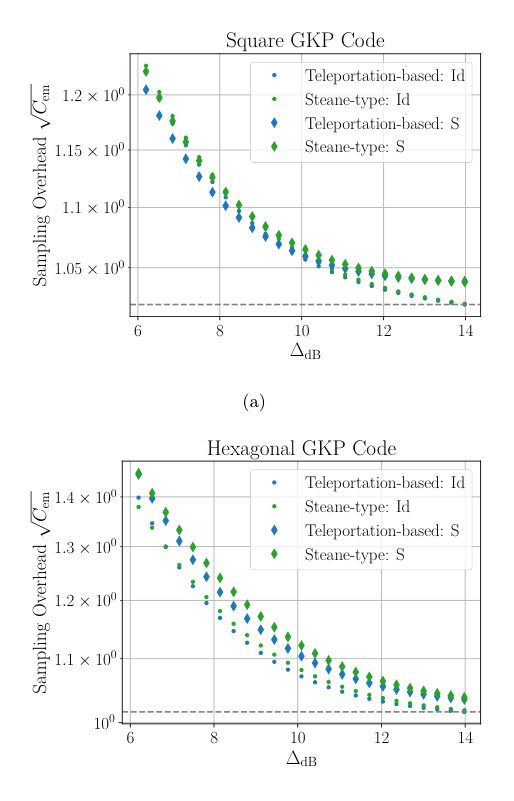
<figcaption class="paper-figure-caption"><b>Fig 1.</b> Figure 4: Overhead comparison for the ¯S-gate and the Identity-gate for a data mode variance σ2 = 0.08 and varying ancilla mode variance.</figcaption>
</figure>
<figure class="paper-figure-card">
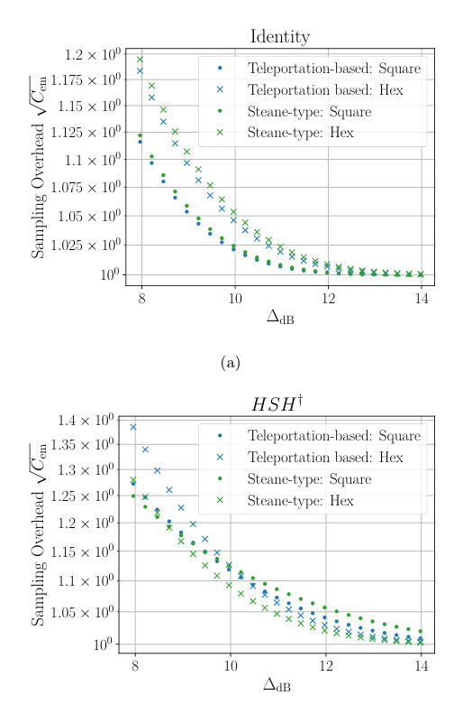
<figcaption class="paper-figure-caption"><b>Fig 2.</b> Figure 5: Overhead comparison for the Identity and the ¯H ¯S ¯H†-gate for teleportation-based and Steane-type GKP error correction.</figcaption>
</figure>
<figure class="paper-figure-card">
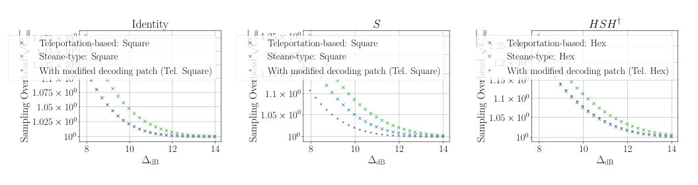
<figcaption class="paper-figure-caption"><b>Fig 3.</b> Figure 6: Overhead comparison for the Identity, ¯S-, and ¯H ¯S ¯H†-gates across error correction methods without modifying the decoding patch.</figcaption>
</figure>
<figure class="paper-figure-card">
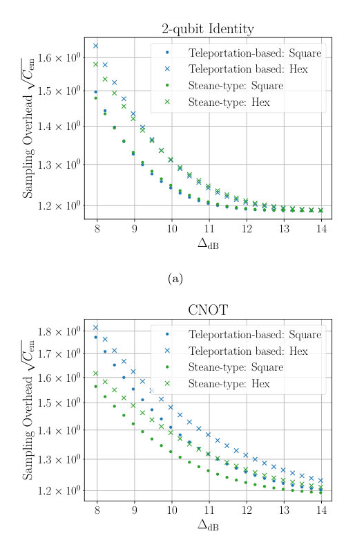
<figcaption class="paper-figure-caption"><b>Fig 4.</b> Figure 7: Overhead comparison for the two-qubit iden- tity gate (a) and CNOT (b) for teleportation-based and Steane-type GKP error correction.</figcaption>
</figure>
<figure class="paper-figure-card">
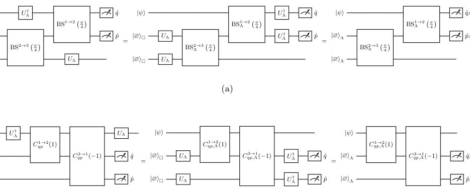
<figcaption class="paper-figure-caption"><b>Fig 5.</b> Figure 8: The transformation of a hexagonal circuit in terms of square GKP code gates and states and vice versa for (a) teleportation-based GKP error correction, adapted from Ref. [47], and (b) Steane-type GKP error correction.</figcaption>
</figure>
</div>

<p><strong>Summary.</strong> This paper investigates combining Quantum Error Correction (QEC) with Quantum Error Mitigation (QEM) for continuous variable quantum computation using the GKP code. It specifically analyzes the overhead required by Probabilistic Error Cancellation (PEC) when applied after standard GKP error correction protocols. The results provide quantitative estimates for noise resilience in these advanced CV quantum computing schemes.</p>
<p><strong>Why it may be interesting.</strong> This work is highly relevant for theoretical physicists working on quantum optics and open quantum systems as it provides concrete, quantitative methods for dealing with realistic noise sources in continuous variable quantum computation architectures.</p>
<details>
<summary>Detailed structure</summary>
<p><strong>Main problem.</strong> The paper addresses the need for fault-tolerant quantum computation by studying the combination of Quantum Error Correction (QEC) with Quantum Error Mitigation (QEM) techniques.</p>
<p><strong>Main result.</strong> It quantifies the sampling overhead associated with using Probabilistic Error Cancellation (PEC) alongside GKP error correction, demonstrating a nontrivial interplay between these two error handling methods in continuous variable codes.</p>
<p><strong>Method.</strong> The authors use the stabilizer subsystem decomposition to characterize the effective logical channel and employ PEC, which involves decomposing an ideal gate into noisy basis operations to estimate expectation values.</p>
<p><strong>Model / system.</strong> The system is based on continuous variable (CV) quantum information encoded using the Gottesman-Kitaev-Preskill (GKP) code, analyzed for both square and hexagonal lattice structures.</p>
<p><strong>Key observables.</strong> Sampling overhead ($C_{em}$), noise covariance matrices ($\Sigma_{	ext{QEC},\Lambda}$), and the effective logical channel.</p>
<p><strong>Important parameters / regimes.</strong> GKP squeezing parameter ($\Delta$), noise parameters (mean $\mu$ and covariance $\Sigma$ for Gaussian Random Displacement noise), and the type of GKP gate (single- or two-qubit Clifford gates).</p>
<p><strong>Assumptions / limitations.</strong> The analysis assumes noise is modeled by Gaussian Random Displacement (GRD) noise and relies on the stabilizer subsystem decomposition to map the noisy process to an effective logical channel.</p>
<p><strong>Figures summary.</strong> Figures illustrate the quantum circuits for both Steane-type and teleportation-based GKP error correction for a single mode, and the appendices detail the mathematical derivations for noise propagation in both schemes.</p>
<p><strong>Paper structure.</strong> The paper builds from defining the GKP code structure (Zak basis completeness) to analyzing the noise propagation through two distinct QEC protocols (Steane vs. Teleportation), and finally applying PEC to estimate the overhead associated with mitigating these residual errors.</p>
</details>
<details>
<summary>Abstract</summary>
<p>In order to solve practical problems on a quantum computer, it is necessary to use fault-tolerant quantum error correction schemes to overcome noise: the errors arising from imperfections in physical components. The Gottesman-Kitaev-Preskill (GKP) code aims at achieving this in a hardware efficient manner by encoding finite-dimensional logical subspaces in the Hilbert space of one or more continuous variable modes. In near term implementations, however, it is not feasible to eliminate errors entirely, so it is natural to also employ alternative error mitigation techniques together with error correction. In this work, we study a quantum error mitigation method known as probabilistic error cancellation in the context of the GKP code. We compare Steane-type and teleportation-based GKP error correction, and calculate the sampling overheads associated with the technique for square and hexagonal GKP codes. We employ the stabilizer subsystem decomposition for GKP codes to obtain an effective logical channel for noisy operations that is used to express the ideal one of a target logical unitary. We consider noise from finite squeezing on the data and the two ancilla modes, needed for error correction, and examine the relationship between the sampling overhead and the noise for different decoding methods. Our results are calculated for single- and two-qubit GKP Clifford gates and one round of error correction, and show the nontrivial combination of error correction and mitigation in continuous variable codes.</p>
</details>
<p><sub><a href="#top">↑ back to top</a></sub></p>

<p><a id="paper-2609.16130"></a></p>
<h3 id="single-instance-observables-in-the-sachdev-ye-kitaev-model"><a href="http://arxiv.org/abs/2609.16130v1">Single-Instance Observables in the Sachdev-Ye-Kitaev Model</a></h3>
<p><strong>Authors:</strong> Brian Swingle<br>
<strong>Type:</strong> theory · <strong>Category:</strong> strongly correlated electrons · <strong>PDF:</strong> <a href="https://arxiv.org/pdf/2609.16130v1">https://arxiv.org/pdf/2609.16130v1</a><br>
<strong>Analysis basis:</strong> full PDF text, analyzed in chunks
<strong>Topic relevance:</strong> <code>Keldysh / 2PI / non-Gaussian methods</code> <strong>2/5</strong></p>
<div class="figure-strip-hint">↔ Scroll figures horizontally</div>
<div class="paper-figures-scroll">
<figure class="paper-figure-card">

<figcaption class="paper-figure-caption"><b>Fig 1.</b> Figure 1: An operator-by-operator preview for one fixed disorder realization at N = 20 and βJ = 2. Black circles are exact-diagonalization values and open diamonds are the parameter- free predictions through relative order 1/N: the leading term, the degree-two and Wick-ordered degree-three fluctuation tensors, and the one-loop correction to the leading coefficient (Sec- tion 4). The left panel shows ten strings selected uniformly with a random seed fixed in- dependently of the coupling values; the right shows the ten largest additive errors among all 4845 strings. Here “largest” means largest |∆X|, where ∆X = ξED X −ξpred X ; the narrow axes display the signed residual in units of the...</figcaption>
</figure>
<figure class="paper-figure-card">

<figcaption class="paper-figure-caption"><b>Fig 2.</b> Figure 2: Melonic dressing for p = 4. (a) The self-energy insertion is a melon: two vertices (dots) joined by p −1 = 3 internal propagators, evaluating to Σ(τ) = J2G(τ)p−1 by the exact index count (27). (b) The Schwinger–Dyson equation (29) resumming the melon on every line: the dressed propagator G (thick) equals the bare propagator G0 (thin) plus one self-energy insertion followed by a dressed propagator.</figcaption>
</figure>
<figure class="paper-figure-card">

<figcaption class="paper-figure-caption"><b>Fig 3.</b> Figure 3: ED weight-4 one-point values ξX versus the leading prediction −4I4(β)JX of (35), at βJ = 0.5, 1, 2 (left to right), for N = 10–20 (color). Each point is one weight-4 string of one disorder realization; both axes are normalized per N by the standard deviation of the predic- tion. Legends give the per-N through-origin slope; the diagonal is unit slope. The prediction is nearly exact at high temperature (slopes ≈1.01 at βJ = 0.5) and degrades smoothly as βJ grows, both the slope and the scatter increasing.</figcaption>
</figure>
<figure class="paper-figure-card">

<figcaption class="paper-figure-caption"><b>Fig 4.</b> Figure 4: Through-origin slope of the ED weight-4 one-point values against the leading predic- tion −4I4(β)JX at βJ = 2, versus 1/N (N = 16–24; 160 disorder seeds, 48 operators per seed). The slope exceeds unity at finite N — about 1.11 at N = 16 — and falls almost linearly in 1/N toward the ideal value 1 (dashed); a fit s(N) = s∞+ a/N gives s∞≈1.00. The residual excess at accessible N is a deterministic coefficient correction analyzed in Section 4.</figcaption>
</figure>
<figure class="paper-figure-card">

<figcaption class="paper-figure-caption"><b>Fig 5.</b> Figure 5: Relative residual scatter rms(ξED −s ξpred)/ rms(ξpred) of the weight-4 one-point values about the fitted slope at βJ = 2, versus 1/ √</figcaption>
</figure>
</div>

<p><strong>Summary.</strong> This work presents a systematic diagrammatic expansion to calculate single-instance thermal observables in the SYK model, bypassing the need for disorder averaging. By organizing the calculation in powers of $N^{-1/2}$, the authors achieve results that match exact diagonalization for small systems and apply the technique to related models like MQ.</p>
<p><strong>Why it may be interesting.</strong> The ability to calculate single-instance, non-averaged thermal properties in highly entangled quantum systems like SYK is crucial for understanding quantum chaos and thermalization dynamics in strongly correlated regimes.</p>
<details>
<summary>Detailed structure</summary>
<p><strong>Main problem.</strong> The paper develops a method to compute single-instance thermal expectation values for low-weight Majorana strings in the Sachdev-Ye-Kitaev (SYK) model, moving beyond standard disorder averaging.</p>
<p><strong>Main result.</strong> The diagrammatic expansion provides excellent quantitative agreement with exact diagonalization results for the four-body SYK model up to $N=24$, and it extends the analysis to the Maldacena–Qi (MQ) model.</p>
<p><strong>Method.</strong> The core method is a diagrammatic expansion organized in powers of $N^{-1/2}$, which expresses observables as finite sums of polynomials in couplings multiplied by temperature-dependent kernels derived from the large-$N$ melonic propagator.</p>
<p><strong>Model / system.</strong> The primary system is the Sachdev-Ye-Kitaev (SYK) model, involving $N$ Majorana fermions with random $p$-body interactions (specifically $p=4$ is highlighted). The analysis is extended to the Maldacena–Qi (MQ) model.</p>
<p><strong>Key observables.</strong> Single-instance thermal expectation values ($\xi_X$) of low-weight Majorana string operators, and time-ordered correlation functions.</p>
<p><strong>Important parameters / regimes.</strong> The ratio $eta J$ (inverse temperature times coupling strength) and the system size $N$. The expansion is organized in powers of $N^{-1/2}$.</p>
<p><strong>Assumptions / limitations.</strong> The method relies on a diagrammatic expansion which is treated as a dressed high-temperature expansion; convergence is noted to be non-uniform at low temperatures ($eta J$ large).</p>
<p><strong>Figures summary.</strong> Figure 1 provides an operator-by-operator preview comparing diagrammatic predictions to exact diagonalization results for $N=20, eta J=2$, showing high fidelity ($R^2_{	ext{id}} = 0.9988$).</p>
<p><strong>Paper structure.</strong> The paper details the diagrammatic expansion (Section 3), discusses corrections to leading diagrams (weight four study in Section 4), extends to time-dependent insertions (Section 5), and applies the method to the Maldacena–Qi (MQ) model (Section 6).</p>
</details>
<details>
<summary>Abstract</summary>
<p>We present a diagrammatic expansion for thermal expectation values of low-weight Majorana strings in a fixed realization of the $N$-fermion Sachdev--Ye--Kitaev (SYK) model. At each order in the expansion, the observable is expressed as a finite sum of polynomials in the couplings multiplied by temperature-dependent kernels built from the large-$N$ melonic propagator. At fixed $βJ$, the expansion is organized in powers of $N^{-1/2}$, and each order can be efficiently evaluated with classical resources polynomial in $N$. The expansion also extends to correlations at arbitrary imaginary times and sufficiently short real times. For the four-body SYK model, we show that the diagrammatic predictions give an excellent account of exact diagonalization results at sizes up to $N=24$. We also apply the method to the Maldacena--Qi (MQ) model formed from two identical copies of a fixed SYK realization. This enables the identification of a nearby SYK-like Hamiltonian whose thermofield double state has higher fidelity with the Maldacena--Qi ground state than the thermofield double of the original SYK Hamiltonian.</p>
</details>
<p><sub><a href="#top">↑ back to top</a></sub></p>

<p><a id="paper-2609.16140"></a></p>
<h3 id="designs-without-disorder-unitary-math607math-designs-from-a-single-site-bulk-defect"><a href="http://arxiv.org/abs/2609.16140v1">Designs without disorder: unitary $k$-designs from a single-site bulk defect</a></h3>
<p><strong>Authors:</strong> Samudra Sur, Pratik Nandy<br>
<strong>Type:</strong> theory · <strong>Category:</strong> statistical mechanics · <strong>PDF:</strong> <a href="https://arxiv.org/pdf/2609.16140v1">https://arxiv.org/pdf/2609.16140v1</a><br>
<strong>Analysis basis:</strong> full PDF text, analyzed in chunks
<strong>Topic relevance:</strong> <code>analog quantum simulation</code> <strong>1/5</strong> · <code>non-equilibrium universality</code> <strong>1/5</strong> · <code>quantum measurements</code> <strong>1/5</strong> · <code>scars &amp; prethermalization</code> <strong>1/5</strong></p>
<div class="figure-strip-hint">↔ Scroll figures horizontally</div>
<div class="paper-figures-scroll">
<figure class="paper-figure-card">

<figcaption class="paper-figure-caption"><b>Fig 1.</b> FIG. 1. Selection rule for the bulk-defect model (L = 10, h⌊L/2⌋= 1). Main: overlap ratio c of Eq. (8) versus domain-wall number Ndw; circles mark realizable integer Ndw, stars denote the roots of c = 0 (i.e., N ∗ dw) from (10), and the gray shaded area to the right denotes the inaccessible region Ndw &gt; L −1. At Jzz = 1, the root falls exactly on N ∗ dw = 7 (green star); at Jzz = 1.5 (red star) it lies at 9.81. Inset: the optimal count N ∗ dw(Jzz) (solid black line), which reaches L −1 at (Jzz)max = 1.374, Eq. (11).</figcaption>
</figure>
<figure class="paper-figure-card">

<figcaption class="paper-figure-caption"><b>Fig 2.</b> FIG. 3. Left: 1PK and 2PK Frame potential with boundary and bulk defects, with the Pauli kick P1 = ZIIIZIZIZZ. The gray and black dashed lines denote (5) with Λ = 3 (GOE) and the Haar value k!, respectively. Right: The normalized F (k) 2PK/k!, saturating to unity (black dashed line) for T ≥104. Here L = 10 with a half-filling sector. The parameters are Jzz = 0.9 with (h1, hL) = (0.7, 1.3) for the boundary and h⌊L/2⌋= 1 for the bulk defects. The results are averaged over 105 independent temporal realizations.</figcaption>
</figure>
<figure class="paper-figure-card">

<figcaption class="paper-figure-caption"><b>Fig 3.</b> FIG. 4. Left: Deviation of the exact first-order 2PK frame potential from Haar value; the bulk defect follows ∆(1) 2PK ∼ 1/d (dashed line: GOE prediction 8/d), the boundary defect shows slower decay than 1/d. Right, top: Tr(w2) converges to GOE kurtosis Λ = 3 for the bulk defect and increases for the boundary defect. Right, bottom: The gap 1 −µ2 stays open for the bulk defect and stays far from unity for the boundary defect as d increases.</figcaption>
</figure>
<figure class="paper-figure-card">

<figcaption class="paper-figure-caption"><b>Fig 4.</b> FIG. 5. Left: Variation of d∆(1) 2PK (dashed line: GOE predic- tion 2(Λ −1)2 = 8) (top) and the gap 1 −µ2 (bottom) with the bulk defect strength h⌊L/2⌋. The gap remains open for higher L with longer windows of the defect strength. Right, top: The deviation d∆(1) 2PK with the position of the defect, which follows the GOE prediction at bulk sites but sharply increases at the boundary. Right, bottom: Finite-size scal- ing of the gap for different defect strength h ≡h⌊L/2⌋. Kicks for L ≤14 are taken from Table I.</figcaption>
</figure>
</div>

<p><strong>Summary.</strong> This theoretical work demonstrates that introducing a localized defect into an integrable quantum spin chain is sufficient to generate approximate unitary k-designs. By employing a two-Pauli-kick protocol, the authors derive a selection rule showing that the defect must break integrability to facilitate this process. This highlights the crucial role of non-integrability in achieving thermalization-like quantum scrambling.</p>
<p><strong>Why it may be interesting.</strong> The work provides a concrete, defect-induced mechanism for achieving thermalization-like properties (k-designs) in systems that are otherwise integrable, which is a key topic in non-equilibrium quantum dynamics.</p>
<details>
<summary>Detailed structure</summary>
<p><strong>Main problem.</strong> The paper investigates whether introducing a small, local defect into an otherwise integrable quantum many-body system is sufficient to generate approximate unitary k-designs.</p>
<p><strong>Main result.</strong> A single bulk defect successfully breaks integrability and enables the formation of approximate unitary k-designs via a two-Pauli-kick protocol, a mechanism that is absent in integrable boundary defect scenarios.</p>
<p><strong>Method.</strong> The study uses the Two-Pauli-Kick (2PK) protocol and analyzes the system's deviation from the Haar ensemble using the frame potential and an overlap ratio derived from Pauli string calculations.</p>
<p><strong>Model / system.</strong> The system is modeled by a spin-1/2 XXZ chain Hamiltonian, which is integrable when clean or only subject to boundary defects. Integrability is broken by a single, localized bulk defect.</p>
<p><strong>Key observables.</strong> Unitary k-design fidelity (measured via the frame potential $F^{(k)}_E$), the overlap ratio $c$, and the domain-wall number $N_{dw}$.</p>
<p><strong>Important parameters / regimes.</strong> The defect strength $h_j$, the kick protocol (2PK vs 1PK), and the system size $L$.</p>
<p><strong>Assumptions / limitations.</strong> The analysis relies on the non-resonance assumption and uses approximations for trace calculations involving Pauli strings.</p>
<p><strong>Figures summary.</strong> Figures illustrate the selection rule for admissible Pauli kicks based on the overlap ratio vs. domain-wall number, and compare the decay of the design fidelity for bulk versus boundary defects.</p>
<p><strong>Paper structure.</strong> The paper establishes the theoretical framework for k-designs, analyzes the 2PK protocol, derives an analytical selection rule based on the defect structure, and contrasts the design-forming capability between bulk-defect and boundary-defect scenarios.</p>
</details>
<details>
<summary>Abstract</summary>
<p>We show that an $O(1)$ local defect is sufficient to generate approximate unitary $k$-designs from an otherwise integrable quantum many-body system. Using a two-Pauli-kick (2PK) protocol with temporal sampling, we demonstrate this mechanism in a fixed-magnetization sector of deterministic XXZ spin chains with a single integrability-breaking bulk defect. We derive an analytical selection rule for the Pauli kicks and show that symmetry-preserving strings with a specific domain-wall count, fixed by the couplings, govern design formation. An exhaustive search over all admissible Pauli strings identifies a broad family of kicks that produce designs in the chaotic regime, whereas no such kicks exist in the integrable limit, including for boundary defects. We further show that the design-forming mechanism remains effective for weak bulk defects as the system size increases.</p>
</details>
<p><sub><a href="#top">↑ back to top</a></sub></p>

<p><a id="paper-2609.17047"></a></p>
<h3 id="trajectory-statistics-govern-mechanical-power-transfer-in-active-baths"><a href="http://arxiv.org/abs/2609.17047v1">Trajectory Statistics Govern Mechanical Power Transfer in Active Baths</a></h3>
<p><strong>Authors:</strong> Chul-Ung Woo, Jiwon Choi, Heiko Rieger<br>
<strong>Type:</strong> theory · <strong>Category:</strong> statistical mechanics · <strong>PDF:</strong> <a href="https://arxiv.org/pdf/2609.17047v1">https://arxiv.org/pdf/2609.17047v1</a><br>
<strong>Analysis basis:</strong> full PDF text, analyzed in chunks
<strong>Topic relevance:</strong> <code>Keldysh / 2PI / non-Gaussian methods</code> <strong>1/5</strong> · <code>correlated / nonlocal dissipation</code> <strong>1/5</strong> · <code>methods for driven-dissipative</code> <strong>1/5</strong> · <code>quantum measurements</code> <strong>1/5</strong></p>
<div class="figure-strip-hint">↔ Scroll figures horizontally</div>
<div class="paper-figures-scroll">
<figure class="paper-figure-card">

<figcaption class="paper-figure-caption"><b>Fig 1.</b> FIG. 1. From free-particle motion to the mechanical response of a moving probe. The moving-probe problem separates into a bath response determined by the free-particle self-ISF, frequency sampling set by the probe velocity, and wave- vector weighting set by the probe-bath interaction. The right panels illustrate the sampled responses for two probe velocities together with the interaction weight. Combining them in the force integral gives the bath force and the mechanical power transferred from the bath to the probe.</figcaption>
</figure>
<figure class="paper-figure-card">

<figcaption class="paper-figure-caption"><b>Fig 2.</b> FIG. 2. Dimension-dependent response of active Brownian particles. (a,b) Rescaled responses Hd(z, Ω) for (a) d = 2 and (b) d = 3, evaluated from converged trunca- tions of the angular hierarchy. The two-dimensional response contains a region with Hd &lt; 0, corresponding to modes that can transfer positive mechanical power, whereas the three- dimensional response remains positive throughout the dis- played domain. (c) Numerical checks of the analytical asymp- totic limits of Hd(z, 0). (d) Deviation 1 −md of the minimum from unity. The numerically obtained minima approach the static large-d scaling 18/d2.</figcaption>
</figure>
<figure class="paper-figure-card">

<figcaption class="paper-figure-caption"><b>Fig 3.</b> Figure 3 compares the finite-frequency responses of the three matched active-particle models in the common di- mensionless variables (z, Ω). The one-dimensional RTP and two-dimensional ABP contain regions with KX d &lt; 0, whereas the AOUP response remains nonnegative. Linear friction depends only on KX d (z, 0). At nonzero imposed speed, a mode making an angle φ with the probe velocity samples the response at Ω= (V/v0)z cos φ. In one dimension, this sampling reduces to |Ω| = (|V |/v0)z. In dimensions d ≥2, the angular degree of freedom allows |Ω| ≤(V/v0)z at each z. Modes with sufficiently small | cos φ| can sample small frequencies even for V &gt; v0.</figcaption>
</figure>
<figure class="paper-figure-card">

<figcaption class="paper-figure-caption"><b>Fig 4.</b> FIG. 3. Finite-frequency response of standard ac- tive baths. Dimensionless responses KX d (z, Ω) for (a) a one- dimensional RTP, (b) a two-dimensional ABP, and (c) a two- dimensional AOUP. Here z = qv0τ and Ω= ωτ. Only Ω≥0 is shown because inversion symmetry makes KX d even in fre- quency. Color denotes the response on a symmetric logarith- mic scale, and solid black contours mark KX d = 0. The dashed line Ω= z corresponds to V = v0 with q ∥V .</figcaption>
</figure>
<figure class="paper-figure-card">

<figcaption class="paper-figure-caption"><b>Fig 5.</b> FIG. 4. Linear friction for Gaussian probes in matched ideal active baths. Friction coefficient per bath density, γ/ρ0, as a function of Γ = v0τ/a for (a) a one-dimensional RTP, (b) a two-dimensional ABP, and (c) a two-dimensional AOUP. Solid curves are the V →0 weak-potential predictions obtained by integrating the corresponding responses at Ω= 0 over wave number with the Gaussian interaction weight. Open circles show direct fixed-velocity simulations at V/v0 = 0.01. Horizontal dashed lines indicate zero friction. The RTP and ABP friction coefficients change sign at ΓRTP c,1 and ΓABP c,2 , re- spectively, whereas the AOUP friction remains positive.</figcaption>
</figure>
</div>

<p><strong>Summary.</strong> This paper develops a theoretical framework showing that the mechanical force and power transferred by an active bath to a probe are governed by the bath's single-particle trajectory statistics. By analyzing specific active models, the authors determine the conditions under which positive power transfer (energy injection) can occur, providing quantitative predictions for phenomena like drag reversal.</p>
<p><strong>Why it may be interesting.</strong> This work provides a powerful, general theoretical tool—the trajectory-response relation—to predict macroscopic mechanical forces and energy flow in complex active matter systems solely from single-particle statistical measurements.</p>
<details>
<summary>Detailed structure</summary>
<p><strong>Main problem.</strong> The paper determines the mechanical force and power transfer exerted by an active bath on a moving probe, linking this response directly to the single-particle trajectory statistics of the bath particles.</p>
<p><strong>Main result.</strong> The sign of the mechanical power transfer depends critically on the specific dynamics of the active bath; for instance, 1D run-and-tumble particles and 2D active Brownian particles can exhibit modes that transfer positive mechanical power, while AOUPs and 2D+ RTPs do not.</p>
<p><strong>Method.</strong> The authors derive a trajectory-response relation that separates the bath dynamics from the wave-vector weighting, allowing the calculation of the force and power using the free-particle self-intermediate scattering function (ISF).</p>
<p><strong>Model / system.</strong> The system consists of a passive probe moving at velocity V immersed in a dilute, ideal gas of noninteracting active particles, modeled using dynamics like Active Ornstein-Uhlenbeck processes, Run-and-Tumble Particles, and Active Brownian Particles.</p>
<p><strong>Key observables.</strong> Mechanical force $F_{	ext{bath}}(V)$, mechanical power transfer $\dot{W}_{	ext{bath}}(V)$, density response $\delta
ho(\mathbf{r}; V)$, and the self-intermediate scattering function $\Phi_0(q, t)$.</p>
<p><strong>Important parameters / regimes.</strong> Probe velocity $V$, wave vector $q$, and the dimensionality $d$ of the system.</p>
<p><strong>Assumptions / limitations.</strong> The analysis is performed at the leading weak-probe, ideal-bath limit, linearizing the response in the probe potential, and assuming non-interacting bath particles.</p>
<p><strong>Figures summary.</strong> The notes do not describe specific figures, but mention that the analysis predicts phenomena like drag reversal, spontaneous probe motion, and motion-induced density distortions.</p>
<p><strong>Paper structure.</strong> The paper establishes the theoretical framework connecting force to trajectory statistics, derives the power transfer criterion, and then applies this framework to analyze specific active particle models (AOUPs, RTPs, ABPs) to determine the sign of energy transfer.</p>
</details>
<details>
<summary>Abstract</summary>
<p>The mechanical response of a moving probe in an active bath reflects both the dynamics of the bath and how the probe couples to it. For a probe moving at velocity $\mathbf V$ and interacting weakly with an ideal active bath, we show that the trajectory statistics of a free bath particle determine a density response from which the bath force on the probe follows. The probe-particle interaction determines how this response is weighted over wave vector $\mathbf q$, while the probe motion selects frequencies $ω_{\mathbf q}=\mathbf q\cdot \mathbf V$. This trajectory-response relation separates the bath dynamics from the wave-vector weighting, so neither the stationary state nor force correlations need to be recalculated for each probe interaction and velocity. Applying this relation to active-particle models, we prove that positive power transfer is excluded for active Ornstein--Uhlenbeck particles in all dimensions and for complete-reset run-and-tumble particles in $d\geq2$, while one-dimensional run-and-tumble particles and two-dimensional active Brownian particles possess modes that can transfer positive mechanical power. For a given probe, this response predicts drag reversal, spontaneous probe motion, and motion-induced density distortions, all in quantitative agreement with simulations. Varying the probe geometry changes how the same bath response is weighted, thereby selecting different moving states. Beyond the leading weak-probe, ideal-bath limit, higher orders in probe strength involve multi-interval trajectory statistics, while finite-density corrections involve interacting-particle dynamics. Our results connect the trajectory statistics of active bath particles to the mechanical response of a passive probe, providing a route to predict probe response from single-particle trajectory statistics measured in the absence of the probe.</p>
</details>
<p><sub><a href="#top">↑ back to top</a></sub></p>

<p><a id="paper-2609.16854"></a></p>
<h3 id="a-data-free-universal-prior-over-syntactic-structures"><a href="http://arxiv.org/abs/2609.16854v1">A Data-free Universal Prior over Syntactic Structures</a></h3>
<p><strong>Authors:</strong> Fermín Moscoso del Prado Martín<br>
<strong>Type:</strong> theory · <strong>Category:</strong> disordered systems and neural networks · <strong>PDF:</strong> <a href="https://arxiv.org/pdf/2609.16854v1">https://arxiv.org/pdf/2609.16854v1</a><br>
<strong>Analysis basis:</strong> full PDF text, analyzed in chunks
<strong>Topic relevance:</strong> <code>analog quantum simulation</code> <strong>1/5</strong> · <code>methods for driven-dissipative</code> <strong>1/5</strong></p>
<div class="figure-strip-hint">↔ Scroll figures horizontally</div>
<div class="paper-figures-scroll">
<figure class="paper-figure-card">

<figcaption class="paper-figure-caption"><b>Fig 1.</b> Figure 1: Incremental language production induces a universal prior over dependency trees.</figcaption>
</figure>
<figure class="paper-figure-card">

<figcaption class="paper-figure-caption"><b>Fig 2.</b> Figure 2: Probability advantage of the sPA model over the uniform model. a, Distribution</figcaption>
</figure>
<figure class="paper-figure-card">

<figcaption class="paper-figure-caption"><b>Fig 3.</b> Figure 3: Correlation between sPA and language-specific PCFG probabilities. a, Example of</figcaption>
</figure>
</div>

<p><strong>Summary.</strong> This work proposes that a universal, data-free prior exists for syntactic structures, derived from modeling the cognitive process of language production. By comparing this theoretical prior against probabilities derived from dozens of real languages, the authors show a strong correlation, suggesting that language structure is partially constrained by universal generative principles rather than solely by accumulated linguistic experience.</p>
<p><strong>Why it may be interesting.</strong> While focused on linguistics, the methodology involves complex statistical inference, modeling emergent structure from local rules (preferential attachment), and comparing theoretical priors against empirical data, which shares conceptual overlap with modeling complex systems in condensed matter or neural networks.</p>
<details>
<summary>Detailed structure</summary>
<p><strong>Main problem.</strong> The paper investigates whether the probability structure of syntactic rules can arise independently of language-specific statistical learning, suggesting a universal, data-free prior.</p>
<p><strong>Main result.</strong> A universal prior derived from a cognitively motivated model of language production shows a strong positive correlation with probabilities estimated from actual linguistic data across many typologically diverse languages.</p>
<p><strong>Method.</strong> The authors compare the probabilities derived from a data-free sublinear preferential attachment (sPA) prior against probabilities estimated using Probabilistic Context-Free Grammars (PCFGs) for various languages.</p>
<p><strong>Model / system.</strong> The model is a cognitively motivated process of incremental language production, where syntactic structures are built up as a growing network (dependency tree). The probability is calculated by integrating over attachment parameters and production orderings.</p>
<p><strong>Key observables.</strong> Correlation coefficients between the universal sPA prior probability and language-specific PCFG probabilities; the linear regression coefficient (beta) linking these two measures.</p>
<p><strong>Important parameters / regimes.</strong> The sublinear attachment exponent $\alpha$ (integrated over a Beta(2, 2) prior); the number of nodes $n$ in the dependency tree.</p>
<p><strong>Assumptions / limitations.</strong> The underlying generative process follows an approximately incremental sublinear preferential attachment model, and language-specific probabilities are adequately approximated by PCFGs.</p>
<p><strong>Figures summary.</strong> Figures illustrate the probability advantage of the sPA model over a uniform prior, and show the positive correlation between the sPA prior and language-specific PCFG probabilities across many languages.</p>
<p><strong>Paper structure.</strong> The paper establishes the problem of data-independent syntactic priors, develops the sPA model based on incremental production, calculates the universal prior via Monte Carlo integration, and finally tests this prior by correlating its predictions against empirical PCFG estimates across a large, diverse dataset of languages.</p>
</details>
<details>
<summary>Abstract</summary>
<p>Probability is fundamental to theories of language comprehension, production, acquisition, and evolution, as well as to large language models. Existing theories estimate the probability of syntactic structures from language-specific data. Whether part of this probability structure can arise independently of language-specific experience remains unknown. Here I show that a universal prior over syntactic structures emerges from a cognitively motivated model of incremental language production, in which words are progressively integrated into syntactic structure through network growth. The resulting prior assigns probabilities to syntactic structures --represented as dependency trees-- without fitting parameters to linguistic data, and assigns higher probabilities to attested than to random trees in all 138 typologically diverse languages examined. These prior probabilities correlate positively with probabilities estimated from corpora in 33 of 34 languages. The results indicate that part of the probability structure of syntax can arise independently of language-specific statistical learning. Linguistic experience may therefore refine probabilities that are already structured by the process of language production, rather than create them from an initially uniform space. This identifies a possible cognitive origin for part of the probability distribution over syntactic structures, linking language production and statistical learning while providing a data-independent structural bias for probabilistic models of language.</p>
</details>
<p><sub><a href="#top">↑ back to top</a></sub></p>

<p><a id="paper-2609.16311"></a></p>
<h3 id="an-improved-auxiliary-boson-method-for-quantum-dots-with-finite-coulomb-interaction-u"><a href="http://arxiv.org/abs/2609.16311v1">An improved auxiliary boson method for quantum dots with finite Coulomb interaction U</a></h3>
<p><strong>Authors:</strong> Juan Pablo Ramos-Andrade, Patricia Almeida, Ana María Calle, Gustavo Lara<br>
<strong>Type:</strong> theory · <strong>Category:</strong> strongly correlated electrons · <strong>PDF:</strong> <a href="https://arxiv.org/pdf/2609.16311v1">https://arxiv.org/pdf/2609.16311v1</a><br>
<strong>Analysis basis:</strong> full PDF text, analyzed in chunks
<strong>Topic relevance:</strong> <code>Keldysh / 2PI / non-Gaussian methods</code> <strong>1/5</strong> · <code>methods for driven-dissipative</code> <strong>1/5</strong></p>
<div class="figure-strip-hint">↔ Scroll figures horizontally</div>
<div class="paper-figures-scroll">
<figure class="paper-figure-card">

<figcaption class="paper-figure-caption"><b>Fig 1.</b> FIG. 1. Schematic view of the setup: the QD coupled to left/right leads. The parameter tL(R) (dashed lines) denotes the leads-QD coupling.</figcaption>
</figure>
<figure class="paper-figure-card">

<figcaption class="paper-figure-caption"><b>Fig 2.</b> FIG. 2. Probability that the QD is in singly occupied state in the case of electron-hole symmetry.</figcaption>
</figure>
<figure class="paper-figure-card">

<figcaption class="paper-figure-caption"><b>Fig 3.</b> FIG. 3. Probability that the QD is in the doubly occupied state or in the empty state, in the case of electron-hole sym- metry.</figcaption>
</figure>
<figure class="paper-figure-card">

<figcaption class="paper-figure-caption"><b>Fig 4.</b> FIG. 4. LDOS as a function of energy for several values of ε0, obtained from NRG. Here, D is the energy unit (D = 1), U = 0.2D, Γ = 0.01D, and the temperature is such that κBT = 10−15D .</figcaption>
</figure>
<figure class="paper-figure-card">

<figcaption class="paper-figure-caption"><b>Fig 5.</b> FIG. 5. LDOS as a function of energy. The NRG results (thick purple line) are fitted to three asymmetric Lorentzian curves (thin green line) to obtain a more accurate fit of the side of the central peak closest to the Fermi level (ε = 0). These curves reproduce the NRG results at the energy cor- responding to each peak maximum and in adjacent energy regions. The inset shows a detailed comparison of the central peak.</figcaption>
</figure>
</div>

<p><strong>Summary.</strong> This paper presents an improved auxiliary boson method to model strongly correlated quantum dots with finite Coulomb interaction U. By refining an existing theoretical framework, the authors achieve an analytically tractable approach that accurately predicts transport properties. The results are rigorously validated by comparing them against established Numerical Renormalization Group calculations.</p>
<p><strong>Why it may be interesting.</strong> This work provides an analytical alternative to purely numerical methods (like NRG) for studying strongly correlated impurity models, which is valuable for theoretical modeling of nanoscale electronic devices.</p>
<details>
<summary>Detailed structure</summary>
<p><strong>Main problem.</strong> The paper addresses the challenge of accurately describing strong electronic correlations in quantum dots (QDs) when a finite Coulomb interaction (U) is present.</p>
<p><strong>Main result.</strong> The improved auxiliary boson method provides an analytically tractable and robust framework that yields results in good agreement with benchmark Numerical Renormalization Group (NRG) calculations.</p>
<p><strong>Method.</strong> The authors refine the auxiliary boson formulation (originally by Kotliar and Ruckenstein) and apply a mean-field approximation to derive the system's Hamiltonian and solve for ground state properties self-consistently.</p>
<p><strong>Model / system.</strong> The system is a single-level quantum dot coupled to two metallic leads, modeled by an Anderson impurity-like Hamiltonian that includes the Coulomb repulsion term U.</p>
<p><strong>Key observables.</strong> Local Density of States (LDOS), probability of the QD being in empty, singly occupied, or doubly occupied states, and the Kondo temperature ($T_K$).</p>
<p><strong>Important parameters / regimes.</strong> The Coulomb interaction U, the coupling strength $\Gamma$, and the energy level $\epsilon_0$. The Kondo temperature scale is given by a specific formula involving U and $\Gamma$.</p>
<p><strong>Assumptions / limitations.</strong> The method relies on the mean-field approximation at low temperatures, and the final comparison is restricted to regimes where U and $|	ilde{\epsilon}_0|$ are significantly larger than $\Gamma$.</p>
<p><strong>Figures summary.</strong> Figures illustrate the probability of the QD occupying different charge states under electron-hole symmetry, and show the LDOS calculated via NRG, which is then fitted by the theoretical model.</p>
<p><strong>Paper structure.</strong> The paper first sets up the Hamiltonian for the QD in the Kondo regime, introduces the improved auxiliary boson formalism, derives the mean-field Hamiltonian, solves for self-consistent bosonic parameters, and finally compares the resulting spectral functions and transport properties against NRG benchmarks.</p>
</details>
<details>
<summary>Abstract</summary>
<p>In this work, we present an improved version of the formulation of the four auxiliary bosons originally proposed by Kotliar and Ruckenstein, adapted to describe a quantum dot in the Kondo regime with finite electron-electron interaction U. The proposed refinement provides a more accurate treatment of strong electronic correlations while preserving the analytical tractability of the original approach, thereby enabling a reliable description of transport properties in nanoscale systems. Benchmark calculations show good agreement with the results of the numerical renormalization group, supporting the validity of the improved formulation. Our approach therefore provides an efficient and robust framework for investigating transport through strongly correlated quantum dots.</p>
</details>
<p><sub><a href="#top">↑ back to top</a></sub></p>
<hr>
<p>
<a href="index.html">← Index</a>
 · <a href="papers_03.html">← Previous</a> · <a href="papers_05.html">Next →</a>
</p>
<hr>

</body>
</html>
